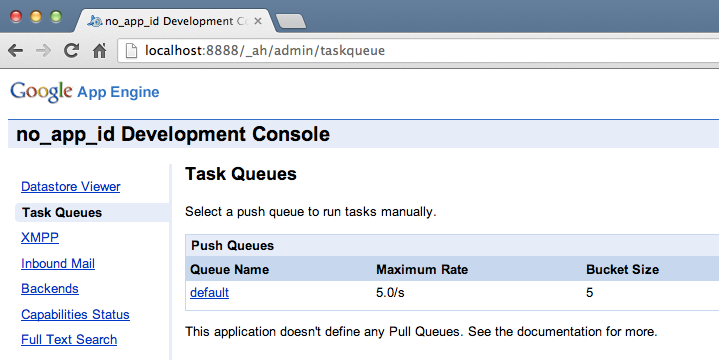
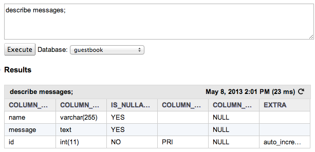
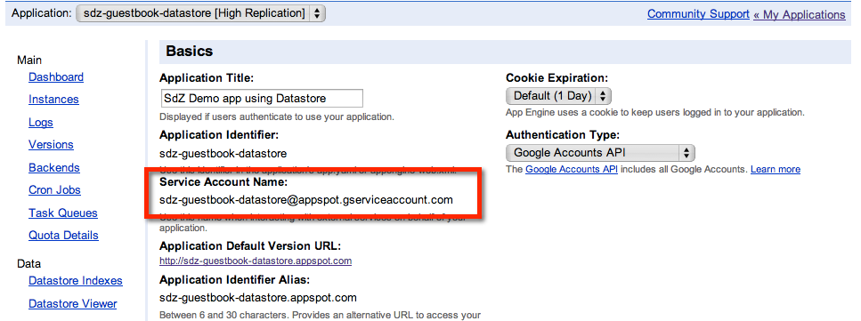
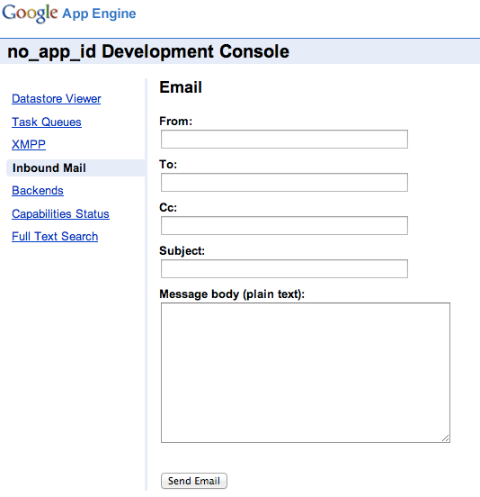

Montez votre site dans le cloud avec Google App Engine
Depuis un moment, on vous bassine avec le même mot : cloud. Vous entendez des choses comme : « Utilise le cloud, et tous tes problèmes seront réglés ! ». Et vous, vous vous demandez ce qui leur prend à parler de cloud à tout va… Le pire, c’est que vous ne savez même pas vraiment ce que c’est !
Je vous propose de découvrir le fonctionnement du cloud avec Google App Engine. Vous n'avez jamais rêvé d'utiliser les serveurs de Google ? De stocker des informations dans leurs gigantesques bases de données ? D'utiliser des centaines de processeurs pour faire vos calculs les plus gourmands ?
Google App Engine vous permet d'héberger votre site sur les serveurs de Google et de bénéficier d'une puissance qui peut s'adapter au trafic de votre site. Besoin de plus de serveurs ? Il suffit de demander, ça se met en place tout seul ! Et le mieux dans tout ça, c'est qu'on peut s'en servir gratuitement tant que le trafic ne dépasse par 5 millions de pages vues par mois, ce qui laisse de la marge !
Cloud, cloud, cloud... Les gens n'ont que ce mot-là à la bouche en ce moment ? Qu'est-ce que c'est ? A quoi ça sert ?
Google App Engine est justement une de ces solutions cloud. C'est un service qui vous permet d’utiliser les mécanismes du "cloud computing" et de bénéficier de leurs avantages pour votre prochain site web.
Comme vous devez avoir une bonne compréhension globale des principes du cloud avant toute chose, je vais justement vous expliquer dans ce premier chapitre ce qu’est le cloud et comment ça fonctionne. Puis, je vous parlerai plus précisément de Google App Engine, le cloud « façon Google », pour que vous puissiez décider si vous ferez votre prochain site avec ces nouvelles technologies. :)
Mettons les choses au clair : « cloud » est d’abord un terme marketing. Voilà pourquoi vous l’entendez souvent. On aimerait que vous disiez « je veux utiliser le cloud pour mon site web »… Bien qu’il s’agisse d’un tutoriel sur le cloud (et donc quelque part à la gloire du cloud !), j’aimerais aiguiser votre esprit critique avant d’aller plus loin.
Comment est né le mot cloud ? Comment a-t-on découvert et mis en place ces nouvelles techniques ? Laissez-moi vous raconter la petite histoire du cloud à travers l'histoire d'Amazon Web Services, qui a précédé le lancement de Google App Engine.
Remontons quelques années en arrière. Juillet 2002. Amazon est un site de vente en ligne qui cartonne. Simple site de vente de livres à l’origine, on peut aujourd’hui tout acheter : jeux vidéo, matériel hi-fi, vêtements, chaussures… Pour évoluer et gérer de plus en plus de clients, Amazon a dû construire lui-même une très grosse infrastructure technique. Eh oui, il faut des serveurs, beaucoup de serveurs.
Des datacenters et des serveurs par milliers
Un site comme Amazon est donc hébergé sur d’innombrables serveurs, eux-mêmes regroupés dans des grands entrepôts appelés datacenters. Tous les très gros sites ont leurs propres datacenters, et Google ne fait évidemment pas exception à la règle.
Un datacenter avec des baies de serveurs
On se croirait dans un décor de science-fiction, et pourtant c'est bien dans des endroits comme celui-ci que tous les plus gros sites web du monde sont hébergés (bon ok la photo a peut-être légèrement été retouchée sur Photoshop :-° ).
Google a diffusé une vidéo de l'un de ses datacenters, c'est assez impressionnant et ça mérite vraiment le coup d'oeil. On peut aussi y naviguer avec Google Street View !
Chaque colonne que vous voyez est appelée une baie de serveurs. A l'intérieur, on peut trouver facilement 15, 20, 30 serveurs. Zoomons un peu sur eux:
Zoom sur les serveurs
Les serveurs sont des ordinateurs comme les autres. Ils ont des ports USB, des ports Ethernet, et évidemment un bouton Power. ;)
Que faire des serveurs inutilisés ?
Pour faire face à la demande qui grandissait de jour en jour, Amazon a dû installer des dizaines de milliers de serveurs dans le monde, eux-mêmes répartis dans de multiples datacenters qui lui appartiennent : aux Etats-Unis, en Irlande, en Asie… Ces datacenters ont poussé comme des champignons ces dernières années.
Tous ces serveurs ne sont pas utilisés en même temps. Certains sont prêts pour faire face à la demande lors des pics de vente (comme Noël). Mais alors, que faire de ces serveurs qui dorment ?
Les ingénieurs d’Amazon ont alors eu l’idée de les louer à d’autres développeurs web. Mais pas comme n’importe quel hébergeur web qui louerait des serveurs dédiés, attention : Amazon s’est dit « on ne va pas louer la machine physique elle-même mais la puissance de nos machines ». Ainsi, les entreprises n'auront plus besoin d'acheter des tonnes de serveurs comme eux juste pour être prêt en cas de pic de trafic : ils devront simplement demander d'utiliser temporairement plus de serveurs les jours où ils ont plus de visiteurs.
Quelle est la différence avec un hébergeur qui loue des serveurs ? :euh:
Dans le cas d'un hébergement traditionnel, vous achetez ou louez vos propres serveurs. Vous pouvez dire, si vous allez dans le datacenter : « ces serveurs-là, ce sont les miens ! » (et si vous les avez achetés, vous pouvez même graver votre nom dessus :p ).
Les ingénieurs d’Amazon ont eu l’idée de « cacher » le fonctionnement de leurs serveurs et de vendre uniquement de la puissance de calcul et du stockage. Bien sûr, au final, c’est toujours un vrai serveur qui répond à vos requêtes (un serveur branché sur une prise électrique avec un disque dur et tout !). Mais la différence est que vous ne savez pas quel est le serveur qui répond aux requêtes. Parfois, le serveur change dans la journée et vous n’êtes pas au courant, mais ça n’est pas grave : ce qui compte, c’est que votre site fonctionne toujours !
L’intérêt de ce fonctionnement, c’est que vous n’avez plus à vous préoccuper des problèmes physiques des machines. Si un disque dur tombe en panne, ce n'est pas à vous d'aller le remplacer. Vous avez juste besoin de demander à votre site de démarrer sur une autre machine.
Voilà comment le cloud (ou cloud computing) est né. Ca n’a rien de magique : il y a toujours des serveurs, des processeurs et des disques durs. Sauf qu’au lieu de vous louer un serveur précis avec son numéro de série, on vous loue « la puissance d’un serveur » et on vous garantit que le service fonctionnera toujours, même en cas de panne matérielle.
Encore un disque grillé... j'aurais dû passer au cloud !
Bon, c'est bien beau tout ça, mais si on rentrait un peu dans le vif du sujet ? Par exemple, comment fonctionne le cloud ? Ah... Ca, c'est une question délicate, parce qu'il existe plusieurs types de cloud !
Les différents types de cloud
Si le cloud est difficile à saisir pour beaucoup de gens, c’est parce que c’est un terme très large qui englobe beaucoup de concepts. Je vous propose pour commencer de retenir les termes suivants, qui font tous partie de la grande famille du cloud :
IaaS (Infrastructure as a Service) : un prestataire vous fournit un accès à tout ou partie de son infrastructure technique, c’est-à-dire à ses serveurs. C’est ce que faisait Amazon à ses débuts dans l'histoire que je viens de vous raconter (ils font d'autres services cloud aussi maintenant).
Analogie : imaginez que vous faites un voyage à travers les Etats-Unis avec 3 amis. Vous avez besoin d’une voiture ; vous faites donc appel à un service de location de voitures. Si la voiture a un problème technique, vous devrez juste la ramener chez le loueur et on vous en donnera une autre. Ce n'est pas à vous de régler les problèmes de moteur de la voiture. Avec un IaaS, vous déléguez donc la gestion de ces problèmes matériels. En revanche, si d’autres amis décident de se joindre à votre voyage en cours de route, il faudra demander vous-mêmes d’autres voitures pour transporter tout ce petit monde.
PaaS (Platform as a Service) : on vous fournit non seulement un accès à l’infrastructure, mais on s’occupe aussi de gérer le nombre de machines nécessaires pour que votre application fonctionne bien quelle que soit la charge de trafic. On vous donne aussi accès à des fonctionnalités comme par exemple des bases de données, des serveurs de cache, des serveurs d’e-mail… C’est le cas de Google App Engine : vous bénéficiez des serveurs de Google pour stocker votre site, mais aussi des fonctionnalités très puissantes de gestion de la charge, un accès aux bases de données Google, aux serveurs d’envoi d’e-mails, etc.
Analogie : reprenons notre voyage à travers les Etats-Unis avec un groupe d’amis. Avec un PaaS, vous ne louez plus directement les voitures : vous embauchez les services d’une personne responsable de vérifier si le voyage se déroule toujours dans les meilleures conditions (appelons cette personne le “concierge”). Si 3 nouveaux amis vous rejoignent en cours de route, le concierge s’en apercevra et louera une seconde voiture sans que vous ayez besoin de le demander. Si d’un coup 20 nouveaux amis se joignent à votre voyage, il remplacera les voitures par un bus qu’il affrêtera spécialement pour vous. C’est exactement ce que fait un PaaS comme Google App Engine : il vérifie que les visiteurs qui vont sur votre site le font dans les meilleures conditions. Il rajoute ou retire des serveurs en fonction du trafic. Vous pourriez presque lui demander des rafraîchissements quand vous avez soif ! ;)
SaaS (Software as a Service) : on vous fournit l’accès à un logiciel sous forme de service. Avant, vous deviez installer le logiciel sur votre machine (ex : Microsoft Office). Aujourd’hui, le logiciel se présente sous la forme d’une application web (qui n’est rien d’autre qu’une sorte de super site web !). Vous devez juste vous rendre à une adresse et vous pouvez l’utiliser (ex : Microsoft Office 360, Google Apps…).
La différence entre un IaaS et un PaaS est ce qu'il y a de plus difficile à comprendre. Je me suis permis de résumer mon analogie de la location de voiture dans un schéma pour vous aider à retenir le principe :
La différence entre un IaaS et un PaaS imagée avec un exemple
Toutes ces offres de Cloud fournissent des services à différents niveaux. Comme les langages de programmation, certains services sont "bas niveau" (proche de la machine) et d'autres sont "haut niveau" (grosse abstraction, éloignée du fonctionnement de la machine) :
Les différents types de cloud
Le calcul du coût
Une des grandes innovations du cloud computing, c’est qu’on vous facture uniquement la puissance dont vous avez besoin. Avant, vous deviez prendre et payer 50 serveurs au cas où il y ait un pic de trafic sur votre site. Aujourd’hui, le nombre de serveurs que vous utilisez peut changer d’une minute à l’autre. On vous facture les serveurs à l’heure, et parfois même à la minute ou à la seconde !
Si vous avez un pic de trafic sur votre site, vous paierez un petit peu plus pendant quelques heures mais vous n’aurez pas besoin d’acheter et de monter des serveurs dont vous n’aurez peut-être plus besoin ensuite.
La plupart des services de cloud peuvent être utilisés gratuitement pour commencer. Si vous avez besoin d’un tout petit peu de puissance, c’est donc gratuit !
Comment ?! Mais il faut bien payer à un moment non ?
Oui, mais seulement si votre site grossit et commence à accueillir beaucoup de visiteurs. Dans ce cas, vous aurez besoin de plus de puissance et il faudra commencer à payer.
Chez Google App Engine, vous pouvez par exemple utiliser gratuitement le service avec 1 Go de stockage et l’équivalent de 5 millions de pages vues par mois.
A vous de surveiller votre consommation ensuite car les services de cloud peuvent finir par être coûteux si votre site commence à grossir beaucoup !
Cloud or no cloud ?
Faut-il partir sur une infrastructure cloud pour votre prochain site ? Il n’y a que vous qui puissiez le décider. Voici quelques éléments vous permettant de faire votre choix en toute objectivité si vous hésitez à vous lancer dans une plateforme PaaS comme Google App engine :
Le cloud vous permet de commencer gratuitement dans la plupart des cas.
Vous n’avez rien à faire si le trafic de votre site grossit : vous utiliserez automatiquement plus de serveurs (et ferez chauffer votre CB :-° ).
Vous n’avez pas à gérer les problèmes techniques « bas niveau » comme la perte d’un disque dur ou même d’un serveur entier. Tout cela est transparent pour vous.
Dans le cas d’un PaaS comme Google App Engine, vous bénéficiez de fonctionnalités très pratiques qui vous évitent d’avoir à installer et maintenir un serveur de base de données, d’e-mails, etc.
En revanche :
Vous devez adapter votre site pour qu’il fonctionne avec les limitations et fonctionnalités offertes par votre PaaS. Il y a des règles à suivre quand vous développez : vous n'avez en général pas accès au système d'exploitation du serveur et vous ne pouvez pas y stocker des fichiers. Il faut les stocker sur d'autres serveurs en faisant appel à un service de stockage.
Si vous voulez changer de prestataire, c’est compliqué. Il faut parfois recoder tout ou partie de votre site pour qu’il fonctionne sur un autre PaaS.
Les bugs techniques sont rares mais peuvent toujours survenir, quoique le service marketing veuille bien tenter de vous faire croire. Ne faites pas une confiance aveugle dans votre cloud et demandez des SLA (Service Level Agreement) pour garantir financièrement le bon fonctionnement du site si vous êtes une entreprise et que le site est critique pour vous. Avec des SLA, le fournisseur aura des pénalités si votre site ne fonctionne pas pendant plusieurs heures par sa faute.
Rentrons un peu plus dans le détail du fonctionnement de Google App Engine. Pour commencer, il faut savoir que Google propose plusieurs services cloud :
App Engine : le service PaaS de Google, la star de la maison. De gros sites comme Khan Academy ou Pulse l’utilisent. C'est ce service que nous étudierons dans ce tutoriel.
Compute Engine : le service IaaS de Google. Si vous avez besoin de puissance de calcul brute (pour calculer des modèles mathématiques par exemple), c’est ce qu’il faut utiliser.
Cloud Storage : un service potentiellement « illimité » de stockage de fichiers dans le cloud. C'est donc un... DaaS. C'est bien, je vois que vous suivez. :p
Big Query : des fonctionnalités permettant d’analyser de grosses quantités de données en peu de temps (on parle de Big Data). Très utile pour les entreprises qui veulent faire de la Business Intelligence (BI) pour avoir des indicateurs de tendance basés parfois sur plusieurs Tera Octets de données.
Cloud SQL : une base de données MySQL distribuée dans le cloud. Vous n’avez pas besoin d’installer ni de mettre à jour MySQL. Pas même besoin de le configurer. Vous pouvez créer des serveurs SQL répliqués en quelques clics si vous avez besoin de plus de puissance.
Les services de Cloud de Google
Comment fonctionne App Engine ?
Le rôle d'App Engine est de "masquer" le fonctionnement et la complexité des serveurs de Google. Lorsqu'un visiteur se connecte à votre site, il arrive sur le load balancer (répartiteur de charge) de Google, qui va chercher un serveur disponible et pas trop chargé pour gérer la demande de votre visiteur. Si votre site a besoin d'accéder à des données, ce qui est fréquent, il fera appel à une autre zone de serveurs appelée DataStore (c'est en quelque sorte la base de données).
Tout ceci est résumé dans ce schéma fourni par Google :
Pas besoin de le comprendre et de le retenir par coeur. :p Retenez simplement ce que je viens de vous expliquer, ce sera déjà pas mal !
Quels langages sont supportés par App Engine ?
Les plateformes PaaS comme Google App Engine supportent un nombre limité de langages de programmation. En effet, elles fournissent des fonctionnalités supplémentaires sous la forme de bibliothèques, il faut donc que Google ait développé les fonctionnalités correspondantes pour ces langages.
Voici les 3 langages supportés par Google à l’heure actuelle (cette liste est susceptible de s'agrandir à l'avenir) :
Java
Python
Go
Dans ce cours, je supposerai que vous savez déjà créer des sites web avec un de ces langages. Mes exemples seront basés sur un site Java EE développé en Java. Allez donc lire les cours sur Java et Java EE (ou sur Python et Django) pour apprendre la création de sites web dynamiques avec ces langages.
Lorsque vous saurez créer des sites en Java ou Python, vous pourrez ensuite découvrir avec moi comment on fait des sites dans le cloud avec Google App Engine !
Allez, vous en savez assez sur le cloud. :) Dans le prochain chapitre, nous allons voir comment mettre en place les outils de développement pour créer un site web en Java en utilisant Google App Engine. Nous allons en fait simuler le fonctionnement des serveurs de Google sur notre propre machine pour créer notre site !
Maintenant que nous savons un peu mieux ce qu'est le Cloud et en quoi consiste Google App Engine, si nous passions un peu à la pratique ? Avant de commencer à développer notre premier site utilisant App Engine, il va nous falloir transformer notre ordinateur en "mini-serveur Google" pour pouvoir faire plus facilement nos tests par la suite.
Heureusement, Google nous fournit tous les outils dont nous avons besoin pour développer. Ces outils varient en fonction du langage que vous utilisez : Java, Python ou Go. Comme je vous l'ai dit, je ne peux pas présenter tous les langages à la fois, j'ai donc choisi de faire mes exemples en Java. (insérez ici le traditionnel troll sur Java une bonne fois pour toutes, qu'on puisse continuer tranquillement ensuite :-° )
La plupart des développeurs Java saints de corps et d'esprit (oui ça existe) utilisent un IDE comme Eclipse. Google y a pensé et nous fournit justement un kit de développement App Engine sous la forme d'un plugin Eclipse !
Si vous avez l'habitude de développer en Java et de faire du Java EE, vous devriez déjà utiliser Eclipse régulièrement. Vous pouvez donc sauter cette étape qui ne vous apprendra rien de nouveau.
Cependant, si vous n'avez pas déjà Eclipse, et puisqu'un rappel ne fait jamais de mal, voici ce qu'il faut faire : il faut télécharger Eclipse (nooon ?). Allez sur la section téléchargement d'Eclipse et sélectionnez la version d'Eclipse de votre choix.
La version la plus téléchargée est "Eclipse for Java EE developers", c'est celle qui convient le mieux dans notre cas. Si vous utilisez une autre version vous ne devriez pas rencontrer de problème rassurez-vous.
Lors du premier lancement, Eclipse vous demandera de choisir un "workspace", un dossier dans lequel il déposera vos projets de développement Java. Vous pouvez laisser la valeur proposée par défaut et continuer.
Installer le plugin Google App Engine dans Eclipse est vraiment très simple. Allez dans le menu Help > Install New Software.
Une fenêtre apparaît, où l'on vous demande où trouver de nouveaux plugins. Rentrez l'adresse suivante (si vous avez la version 4.2 d'Eclipse comme moi, sinon changez l'URL) :
Appuyez sur Entrée. La liste des plugins disponibles se charge. Je vous invite à cocher ceux-ci :
Google Plugin for Eclipse
SDK > Google App Engine Java SDK
SDK > Google Web Toolkit SDK (facultatif)
Votre fenêtre devrait alors ressembler à ceci :
Sélection des plugins à installer
Vous pouvez installer d'autres plugins si vous le voulez mais ça ne nous sera pas nécessaire ici. Cliquez ensuite sur Next.
Validation des éléments à installer
On vous demande de vérifier ce que vous allez installer. Cliquez encore sur Next.
Validation de la licence
Vous devez valider la licence d'utilisation. Cliquez sur "I accept the terms of the license agreements" et continuez. L'installation devrait commencer.
Au bout d'un moment, vous verrez le message suivant :
Validation de la signature
Pas de panique. Eclipse avertit qu'il y a du contenu non signé (qui pourrait ne pas provenir de Google) dans ce que vous téléchargez. En réalité il n'y a pas de problème, cliquez sur OK pour continuer l'installation.
A la fin, on vous demandera de redémarrer Eclipse pour finaliser l'installation :
Redémarrage d'Eclipse
Une fois Eclipse redémarré, c'est fini ! Si vous lancez un nouveau projet ou que vous fermez simplement l'écran de bienvenue, vous devriez voir une icône Google (représentée par un "g") qui vous donne accès aux fonctionnalités de Google App Engine que nous avons installé :
Le menu Google dans Eclipse
Voilà, vous avez installé Google App Engine sur votre ordinateur et vous êtes maintenant prêts à programmer ! :)
Maintenant que nous avons installé Eclipse et le plugin Google App Engine, tout est prêt pour que nous commencions à créer notre première application App Engine !
Dans ce chapitre, nous allons nous familiariser avec les outils que nous donne le plugin App Engine. Vous allez voir que créer une première application est vraiment très très simple. Nous irons même jusqu'à la déployer (c'est-à-dire la mettre en ligne) sur les serveurs de Google !
Je vous rappelle que vous devez déjà avoir des connaissances sur Java EE pour suivre ce tutoriel (je voudrais bien tout vous réexpliquer mais ce serait vraiment trop long, et puis on a un super tutoriel sur le Site du Zéro sur Java EE !). Je montrerai rapidement certains concepts, comme les servlets et les JSP, sans trop m'attarder dessus. Je vous montrerai surtout ce qui change par rapport à une application Java EE classique.
Pour créer une nouvelle application App Engine, utilisez le bouton "g" de Google qui a été ajouté lorsque vous avez installé le plugin. Sélectionnez "New Web Application Project".
Nouvelle application App Engine
Un assistant de création de projet s'ouvre. A l'intérieur :
Donnez un nom à votre premier projet (par exemple "MaPremiereApplication")
Donnez un nom au Package que vous allez créer (par exemple "maPremiereApplication")
Vérifiez que les cases "Use Google App Engine" et "Generate project sample code" sont cochées.
En revanche, décochez "Use Google Web Toolkit" si vous l'avez installé, il ne nous sera pas utile ici et alourdira inutilement le projet.
Préparation de l'application
Cliquez sur Finish. Le plugin App Engine se charge de créer et d'organiser les fichiers de votre application tout seul !
Et si on regardait un peu comment ces fichiers sont organisés maintenant ? :)
En générant notre premier projet, le plugin App Engine a créé toute une architecture de fichiers et de dossiers. Elle ne devrait pas trop vous dépayser si vous avez l'habitude de développer en Java EE.
Structure des fichiers d'un projet App Engine
J'ai surligné les fichiers qui méritent qu'on y jette un oeil. Je vous propose qu'on en parle un petit peu. :)
MaPremiereAppServelet.java
C'est un fichier de code source Java. On l'appelle servlet quand on développe des applications web Java EE.
Ce fichier contient une classe qui peut interagir avec le serveur web. Elle peut récupérer les données envoyées par le visiteur depuis un formulaire et les traiter par exemple.
Le code généré par le plugin ressemble à ceci :
package maPremiereApp;
import java.io.IOException;
import javax.servlet.http.*;
@SuppressWarnings("serial")
public class MaPremiereAppServlet extends HttpServlet {
public void doGet(HttpServletRequest req, HttpServletResponse resp)
throws IOException {
resp.setContentType("text/plain");
resp.getWriter().println("Hello, world");
}
}
Tout se passe dans la méthode doGet() qui est appelée quand le visiteur demande la page. Ici, la servlet ne fait rien de particulier : elle affiche "Hello, world" sur la page sous forme de texte brut. Elle pourrait néanmoins faire beaucoup d'autres choses, comme récupérer les données envoyées par un formulaire, demander à les stocker dans une base de données de Google, envoyer des emails à l'aide des serveurs utilisés par GMail et bien d'autres choses. Nous verrons comment faire tout cela dans les prochains chapitres !
Cette servlet ressemble en tous points à une servlet d'application Java EE classique, si ce n'est qu'on peut accéder à tous les services offerts par les bibliothèques d'App Engine.
appengine-web.xml
C'est un fichier de configuration propre à App Engine. C'est en fait le seul de la liste que je vous présente qui diffère d'un projet Java EE classique (si on ne tient pas compte des nombreuses bibliothèques d'App Engine qui ont été chargées mais que nous n'avons aucun besoin d'ouvrir).
Eclipse a la fâcheuse tendance à afficher ce fichier dans une interface spécifique, alors que ce n'est en fait qu'un simple fichier XML :
Eclipse affiche les XML dans une interface spécifique
Pour changer de mode de visualisation, cliquez sur l'onglet "Source" en bas à gauche. Vous devriez alors voir le vrai code XML :
<?xml version="1.0" encoding="utf-8"?>
<appengine-web-app xmlns="http://appengine.google.com/ns/1.0">
<application></application>
<version>1</version>
<!--
Allows App Engine to send multiple requests to one instance in parallel:
-->
<threadsafe>true</threadsafe>
<!-- Configure java.util.logging -->
<system-properties>
<property name="java.util.logging.config.file" value="WEB-INF/logging.properties"/>
</system-properties>
<!--
HTTP Sessions are disabled by default. To enable HTTP sessions specify:
<sessions-enabled>true</sessions-enabled>
It's possible to reduce request latency by configuring your application to
asynchronously write HTTP session data to the datastore:
<async-session-persistence enabled="true" />
With this feature enabled, there is a very small chance your app will see
stale session data. For details, see
http://code.google.com/appengine/docs/java/config/appconfig.html#Enabling_Sessions
-->
</appengine-web-app>
Le fichier est assez simple en fait. Google a laissé quelques commentaires pour nous aiguiller si on veut compléter le fichier.
A quoi sert ce fichier en fait ?
Il donne des informations générales sur votre application App Engine : son nom, sa version... Il permet d'activer certaines fonctionnalités comme les sessions, des services de Google, etc.
Le nom et la version
Pour le moment, l'application n'a pas de nom. On devrait d'ailleurs plus exactement parler d'identifiant, car l'application doit avoir un nom unique sur les serveurs de Google, nous verrons cela un peu plus tard.
Le numéro de version permet, lui, d'identifier la version de votre application. Vous pouvez tester une nouvelle version de votre application en ligne pendant que vos visiteurs sont sur une ancienne version. Et lorsque vous trouvez que votre nouvelle version fonctionne bien, il ne vous faudra que quelques clics dans l'interface d'administration de Google pour rediriger vos visiteurs vers la nouvelle version !
Par exemple, si votre site a pour nom "monsupersite", il sera accessible par défaut à cette adresse :
Le fichier appengine-web.xml permet aussi d'indiquer où se trouvent les fichiers statiques de votre site, c'est-à-dire les images (PNG, JPEG...), les CSS, les Javascript, etc. En gros, tout ce qui n'est pas du code Java.
Tous les fichiers de votre site n'ont pas besoin de subir de traitement particulier par les serveurs de Google. Un PNG est un PNG, il n'est (normalement) pas modifié par le serveur avant envoi au visiteur, alors qu'une servlet requiert une exécution par un processeur. On vous demande donc d'indiquer où sont ces fichiers statiques pour que Google puisse les mettre à part sur des serveurs spécifiques qui n'ont pas besoin d'autant de puissance processeur.
Les fichiers statiques sont stockés sur des serveurs différents des servlets et JSPs
L'avantage de mettre les fichiers statiques sur des serveurs spécifiques, c'est que Google peut ainsi les dupliquer sur plusieurs serveurs via un CDN (Content Delivery Network). Ainsi, chaque visiteur ira récupérer les fichiers statiques sur le serveur le plus proche de lui, ce qui rendra leur téléchargement plus rapide. :)
Avec un CDN, le visiteur télécharge les fichiers depuis le serveur le plus proche
Pour indiquer à Google quels sont les fichiers statiques, vous devrez ajouter des balises XML incluant ou excluant des fichiers. Par exemple :
On a 2 règles d'inclusion et 1 règle d'exclusion dans cet exemple :
Tous les fichiers .png seront considérés comme statiques et entreposés dans des serveurs de stockage (à une exception près que je vous indiquerai juste après). Les deux étoiles ** signifient que Google peut aller chercher les .png dans tous les sous-dossiers.
Tous les fichiers .js dans le dossier /javascript uniquement seront considérés statiques.
En revanche, les fichiers .png du dossier "generator" seront exclus des fichiers statiques (ils seront bien placés sur les serveurs d'exécution). C'est utile si, par exemple, le dossier generator contient en réalité du code Java qui génère des PNG et qui les présente sous la forme de fichiers PNG pour le navigateur.
web.xml
C'est le fichier de configuration "classique" de votre application Java EE. Il ne faut pas le confondre avec appengine-web.xml :
appengine-web.xml contient la configuration de votre application Java EE App Engine, c'est-à-dire de tout ce qui est spécifique à App Engine dans votre application (comme la définition de fichiers statiques pour que Google sache sur quels serveurs les placer).
web.xml contient la configuration générale de votre application Java EE, comme par exemple la liste des servlets et l'adresse correspondant à chacune d'elle sur votre site.
Ce fichier est couramment modifié quand on développe une application Java EE. Il devrait vous être familier. Ici, pour le moment, le fichier contient ceci :
On voit par exemple que la servlet MaPremiereApp (dont on a vu le code Java tout à l'heure) est appelée quand le visiteur essaie d'accéder à la page /mapremiereapp de votre site. Le fichier index.html est appelé par défaut à la racine de votre site. C'est donc lui qui sera chargé comme page d'accueil.
index.html
C'est la page qui sera affichée à votre visiteur à l'accueil de votre site. Il s'agit d'une page HTML tout ce qu'il y a de plus basique.
Nous pouvons bien entendu la modifier ou même demander au fichier web.xml d'appeler une servlet à la place de cette page statique pour l'accueil de notre site.
Pour tester votre site, il suffit de cliquer sur le bouton "Debug" (ou "Run") de la barre d'outils, et de sélectionner : "Debug as" > "Web Application" :
Exécution de l'application depuis Eclipse
La console en bas d'Eclipse devrait afficher des messages pendant quelques secondes avant d'indiquer : "INFO: Dev App Server is now running". Cela signifie que le mini-serveur Google tourne maintenant sur votre machine et que vous pouvez tester votre site !
Si vous regardez bien, on vous indique à quelle adresse locale vous pouvez tester votre site :
INFO: Server default is running at http://localhost:8888/
Allez donc à l'adresse http://localhost:8888 dans votre navigateur, vous devriez voir la page d'accueil s'afficher :
Ouverture du site dans le navigateur (sur localhost:8888)
Il s'agit là du fichier index.html que nous avons vu tout à l'heure dans le projet sous Eclipse. Si vous cliquez sur le lien "MaPremiereApp", la servlet MaPremiereApp sera chargée et s'exécutera. Comme je vous l'ai dit, cette servlet ne fait rien de bien excitant pour le moment : elle affiche juste "Hello, world" !
Affichage de la servlet dans le navigateur
Il faut aussi savoir que Google génère automatiquement une administration pour contrôler et surveiller votre site. Vous pouvez y accéder en allant à l'adresse http://localhost:8888/_ah/admin :
L'administration automatiquement générée par Google pour gérer votre application
D'ici, vous pourrez surveiller votre application : voir les données stockées dans le Datastore (la "base de données Google", que nous étudierons plus tard), simuler des emails entrants, désactiver des fonctionnalités pour voir le comportement de l'application en mode dégradé, etc.
Bon, nous avons exécuté l'application qui a été générée par Google, ce n'était pas bien difficile. Je vous propose de la déployer maintenant sur les serveurs de Google. :D
Pour pouvoir envoyer notre application App Engine sur les serveurs de Google, nous devons d'abord réserver un identifiant d'application. Nous pourrons ensuite dans un second temps déployer l'application directement depuis Eclipse !
Déclarer l'application auprès de Google
Commencez par vous rendre à l'adresse suivante : https://appengine.google.com/ C'est ici que vous pourrez créer et gérer vos application App Engine.
Si vous n'avez pas déjà de compte Google (un compte GMail par exemple) il vous faudra en créer un et vous connecter. Une fois que c'est fait, vous devriez voir l'écran suivant :
L'interface d'administration de vos projets App Engine chez Google
Cliquez sur "Create Application" pour commencer la déclaration de votre application chez Google. La première fois, on vous demandera sûrement une authentification supplémentaire, pour "éviter les abus" vous dit-on. Il suffit d'indiquer votre numéro de téléphone portable, d'attendre de recevoir un SMS contenant un code secret et de l'écrire sur la page.
Une fois que c'est fait, un simple formulaire vous demande de créer l'identifiant de votre application et de lui donner un nom :
Création de l'application
Vous devrez utiliser un identifiant d'application libre. Cliquez sur "Check Availability" pour vérifier si celui que vous voulez prendre est disponible.
Le formulaire vous demande si vous voulez restreindre les utilisateurs qui se connecteront sur votre site à des comptes Google spécifiques à un domaine (par exemple le domaine d'une entreprise si vous faites une application pour votre entreprise). N'y touchez pas, ça ne nous sert à rien ici.
Validez la licence... et voilà !
On vous propose un lien vers le dashboard (tableau de bord) de votre application. D'ici, vous pouvez voir tout ce qui se passe sur votre site et contrôler toute votre application !
Administration de l'application
Quelle est la différence entre cette zone admin et celle que nous avons vue un peu plus tôt après avoir testé le site en local ?
L'admin du site local permet de faire des tests précis pour débugger temporairement votre application. En revanche, l'admin que vous avez maintenant sous les yeux est beaucoup plus complète : elle vous donne des indications sur l'application qui est en ligne et disponible à tous. Vous pouvez voir le trafic, mettre en maintenance votre site, augmenter la puissance des serveurs, et bien d'autres choses ! :)
Déploiement : direction les serveurs de Google !
Maintenant que Google nous connaît et que nous avons réservé un identifiant, nous pouvons retourner dans Eclipse et envoyer notre site !
Il faut d'abord indiquer l'identifiant de l'application dans le fichier appengine-web.xml dans la balise <application></application> :
Vous pouvez maintenant déployer ! Allez dans le menu Google et cliquez sur "Deploy to App Engine" :
Demandez le déploiement depuis le menu Google
La première fois, on vous demandera de vous connecter à votre compte Google pour qu'on puisse vous identifier. Rentrez votre login et votre mot de passe. Une fois connecté, on vous demande de valider avant de déployer :
Validation avant déploiement
Cliquez tout simplement sur "Deploy" : votre site part alors sur les serveurs de Google comme un grand !
Le déploiement est en cours, vous n'avez rien à faire !
Voilà, votre site est maintenant disponible à une adresse de la forme : http://applicationid.appspot.com (remplacez applicationid par l'identifiant de votre application).
Dans mon cas, l'application est disponible à cette adresse :
Allez-y, je l'ai envoyée au moment où j'ai écrit ce tutoriel et elle tourne toujours à l'heure où vous lisez ces lignes ! Google se charge de gérer les serveurs et de faire en sorte que les sites web soient toujours en ligne, c'est l'intérêt justement d'utiliser une solution de cloud PaaS (Platform as a Service) comme Google App Engine. :)
Mais... Mon site est dans un sous-domaine de appspot.com, je n'aime pas l'adresse que ça lui donne ! Il n'y a pas moyen de changer ça ? :o
Bien sûr que si ! :D
Vous pouvez tout à fait faire en sorte que votre site soit disponible depuis www.monsupersite.com (si vous avez acheté le nom de domaine), pour ne pas que vos visiteurs voient un "appspot.com" qui n'a rien à faire là pour eux.
Il faut aller dans l'administration de l'application, section "Administration" > "Application Settings" et cliquer sur le bouton "Add Domain" dans "Domain Setup". Il faudra associer au préalable le domaine avec Google Apps et modifier les entrées DNS auprès du registrar chez qui vous avez acheté le nom de domaine. Toutes les instructions sont données dans la documentation de Google. Allez, ne faites pas cette tête, un peu de lecture de documentation ne peut pas vous faire de mal !
Et maintenant
Bravo, vous avez réussi à déployer votre première application Google App Engine !
Dans la suite de ce cours, nous allons découvrir dans le détail toutes les fonctionnalités offertes par Google App Engine : comment stocker des données dans le Datastore, comment authentifier les utilisateurs depuis leur compte Google, envoyer des e-mails, gérer le cache et bien d'autres choses !
Le stockage de données est le point le plus important, que dis-je, le plus fondamental, le plus crucial d'une application web ! Où stocker la liste de vos membres ? Les messages qu'ils postent ? Les commandes qu'ils effectuent ? Les fichiers qu'ils envoient ?
Ce n'est pas un hasard si, après avoir découvert les bases d'App Engine, nous enchaînons tout de suite sur le stockage des données. C'est vraiment le vif du sujet.
Bien sûr, App Engine nous offre beaucoup d'autres services (et je vous les présenterai dans une prochaine partie). Mais votre site web ne sert à rien si vous ne savez pas comment y stocker des données. Nous allons donc passer du temps à découvrir les choix qui s'offrent à nous dans ce chapitre, puis à apprendre à nous servir des différents moyens de stockage à notre disposition dans les prochains chapitres.
Vous allez voir, avec une architecture Cloud comme Google App Engine il y a des choses qu'on avait pris l'habitude de faire qui ne sont plus possibles. Ecrire un fichier sur le disque du serveur est par exemple interdit ! Pourquoi ? Ah ah, il y a une vraie raison à ça, je vais vous l'expliquer. :)
Avant d'aller plus loin, il faut qu'on parle ensemble de l'architecture des serveurs d'un site web. C'est une notion indispensable pour comprendre la suite.
Comme vous le savez peut-être, les serveurs peuvent fournir différents services :
Le serveur web : c'est lui qui répond directement aux requêtes des clients et qui exécute les instructions de la page en Java, Python, PHP... Son rôle revient grosso modo le plus souvent à renvoyer une page HTML au client.
Le serveur de stockage de fichiers : il se contente de stocker des fichiers statiques (donc pas de Java, Python ou PHP là-dedans!). Ca concerne aussi bien les images de votre site, les images uploadées par vos visiteurs, les fichiers CSS, les fichiers JS, etc. Ces fichiers peuvent être efficacement servis via un CDN (un ensemble de serveurs répartis sur la planète).
Le serveur de base de données : il enregistre les informations de façon structurée. Il stocke la liste des membres, la liste des messages, la liste des commandes, etc.
Ces serveurs peuvent être tous regroupés au sein d'une même machine physique. Une seule machine peut en théorie faire toutes ces choses-là à la fois. C'est l'architecture serveur la plus simple :
L'architecture la plus simple : un seul serveur fait tous les services
Cette architecture est la plus facile à mettre en place. Mais elle a un gros défaut : si la machine rend l'âme, votre site web ne fonctionnera plus du tout ! Pire, si le disque dur est grillé et que vous n'avez pas de sauvegardes, non seulement vous perdez toutes les données de la base, mais aussi tous les fichiers stockés !
Pour remédier à ce problème, on commence par séparer les services sur différentes machines physiques :
Les services sont répartis sur des serveurs différents
Cette architecture est déjà bien meilleure. On évite de surcharger le serveur web (souvent appelé le "frontal web") car on répartit le reste des activités sur d'autres serveurs : un serveur de stockage de fichiers, un serveur de base de données...
Mais il y a toujours un défaut : si le disque du serveur de base de données rend l'âme, il n'y a plus de base de données ! Si le frontal web devient surchargé, il ne peut plus traiter les demandes et n'a plus assez de puissance pour exécuter les fichiers Java / Python / PHP / etc. Du coup, on commence à redonder chaque serveur pour chaque service. On en met plusieurs :
On redonde les serveurs pour éviter les pannes et avoir plus de puissance
Et là ça devient vraiment compliqué : comment indiquer au client quel serveur il doit appeler ? Comment gérer la charge de chaque machine ? Comment empêcher que des clients appellent une machine qui ne répond plus ?
C'est là qu'un service de Cloud en PaaS comme Google App Engine fait des merveilles : il simplifie toute la gestion des serveurs pour que vous n'ayez plus à vous en préoccuper. Vous n'avez plus besoin de savoir ce qui se passe au niveau des serveurs.
En général, on représente ce principe de façon très simple : sous la forme d'un nuage qui masque la complexité (d'où le nom "cloud").
Le Cloud masque la gestion des serveurs pour vous simplifier la vie
Cette simplicité apparente ne doit pas vous tromper. Si vous ne manipulez plus les serveurs directement, vous allez quand même devoir utiliser les services fournis par Google dans votre application pour qu'elle fonctionne. Quels sont ces services ? C'est ce que nous allons voir maintenant !
Nous venons de voir que l'architecture des serveurs du Cloud était... nébuleuse. On ne sait pas combien de serveurs sont utilisés par Google App Engine : ce nombre augmente ou diminue tout seul au fil du temps. Il ne faut plus penser en serveurs mais en services. App Engine nous fournit une flopée de services pour résoudre nos problèmes les plus courants. Dans cette partie du cours, nous nous intéressons aux services de stockage.
Les services de stockage d'App Engine
Réfléchissez un instant. Qu'avez-vous l'habitude de stocker d'habitude ? On pourrait distinguer deux types de besoins :
Stocker des informations : on a très régulièrement besoin d'enregistrer des informations. Ca peut être le nom d'un nouveau membre, un message qu'il laisse, une commande qu'il effectue sur le site...
Stocker des fichiers : on a parfois besoin de stocker de nouveaux fichiers, que ce soient des images, des .zip, etc. Ces fichiers sont le plus souvent uploadés par les utilisateurs du site web.
Pour répondre à ces besoins, Google App Engine fournit différents services :
Pour le stockage d'informations, on a en général besoin d'une base de données. C'est en effet le moyen le plus sûr et le plus structuré pour "ranger" les informations. Google App Engine propose 2 types de bases de données :
Une base de données relationnelle SQL : c'est le service Google Cloud SQL. Il s'agit en fait d'une base de données MySQL gérée en Cloud.
Une base de données non relationnelle NoSQL : c'est le service Datastore. Il est basé sur Big Table, le système de stockage créé par Google pour ses propres services pour des besoins de performance (qui a d'ailleurs lui-même inspiré en bonne partie le mouvement NoSQL).
Pour le stockage de fichiers, on utilisera le service Google Cloud Storage. A noter qu'il existe aussi le Blobstore qui fait globalement la même chose mais avec moins de fonctionnalités (et comme il tend à être remplacé par Google Cloud Storage nous n'en parlerons pas ici).
Résumons dans un schéma les différents choix qui s'offrent à nous :
Les services de stockage Cloud de Google
Ok, je sais faire la différence entre des fichiers et des données. Par contre, comment je sais moi si mes données sont "fortement structurées" ? :euh:
C'est clairement la question la plus délicate. Tout dépend de votre modèle de données, de l'importance des données que va traiter votre site et de bien d'autres choses. Voici d'autres façons de le voir pour vous aider à choisir :
Si vous adaptez un site déjà existant sur Google App Engine et que vous utilisez une base de données relationnelle comme MySQL, il est inutile de tout changer. Utilisez la base de données relationnelle Google Cloud SQL. Elle sera compatible.
Si vous êtes curieux de découvrir une nouvelle façon de stocker les données, que vous avez toujours entendu parler de NoSQL mais que vous n'avez jamais eu l'occasion de vous y mettre, essayez-vous au Datastore.
Si vous préférez opter pour la prudence et que vous avez vos habitudes pour créer une base de données, ne changez pas tout et utilisez Google Cloud SQL. Vous saurez vous y retrouver rapidement.
Si vous créez un nouveau site et que vous anticipez un très fort trafic, beaucoup de lectures et d'écritures simultanées, utilisez le Datastore. Le fait qu'il soit basé sur Big Table, le système de stockage utilisé par Google lui-même, vous indique à quel point il peut être performant. En contrepartie, vous ne pourrez cependant plus utiliser certaines fonctionnalités non essentielles des bases de données SQL.
Les bases de données SQL comme MySQL structurent les informations sous forme de tableaux (appelés les tables). Vous connaissez certainement déjà ça. En revanche, les bases NoSQL comme le Datastore sont beaucoup plus basiques : elles stockent des paires de données clé-valeur. Par exemple : pseudo = "Mateo21". Les données sont assemblées entre elles mais de façon beaucoup moins forte et structurée que dans une base SQL. En fait, il faut imaginer que le Datastore ressemble plus à un système de stockage XML qu'à des tableaux.
Différences entre les structures SQL et NoSQL
Nous y reviendrons bien plus en détail quand nous parlerons du Datastore. ;)
Pas de configuration à faire, mais de nouvelles règles
L'intérêt de tous ces services de stockage Cloud est que vous n'avez pas à gérer le nombre de serveurs nécessaires pour que votre application fonctionne. Vous n'avez pas besoin non plus d'installer les logiciels, de les configurer et de faire les mises à jour. Par exemple, Google Cloud SQL, qui est basé sur MySQL, vous épargne toute l'installation et la configuration de MySQL. S'il y a une mise à jour de sécurité à faire, c'est Google qui s'en charge de façon transparente pour vous.
Cette simplicité s'accompagne cependant de nouvelles règles. Avec l'architecture cloud de Google App Engine, vous ne savez pas combien de frontaux web sont utilisés pour faire tourner votre site. Ce nombre augmente ou diminue tout seul au fil du temps en fonction des besoins. Potentiellement, plusieurs frontaux web peuvent tourner en même temps. Tôt ou tard, vous allez vous poser une question anodine et pourtant très importante : si un visiteur envoie un fichier via un formulaire, où doit-on le stocker ?
Si vous aviez une architecture simple avec un seul serveur, vous pourriez stocker le fichier quelque part sur votre serveur et ça fonctionnerait. Mais ce n'est plus possible avec de multiples serveurs sur App Engine : s'il y a à un moment donné 3 frontaux A, B et C et qu'un visiteur uploade sur le frontal A, les frontaux B et C ne posséderont pas le fichier !
Les frontaux web de Google App Engine ne sont pas faits pour stocker les données
La même chose est valable pour les fichiers comme pour les données d'une base. Impensable de stocker ça sur les frontaux web vu qu'ils sont nombreux et peuvent naître comme mourir à chaque instant en fonction du trafic ! Voilà pourquoi Google nous interdit d'écrire des fichiers sur les frontaux web. Cela fait partie des nouvelles règles que nous allons devoir respecter.
La solution est d'utiliser les services de Google, comme Google Cloud Storage pour le stockage de fichiers uploadés.
Utiliser des serveurs spéciaux permet à tout le monde de retrouver les données
Google Cloud Storage, Google Cloud SQL, le Datastore... Ca fait quand même beaucoup de services qu'il va falloir apprendre à utiliser. Va-t-on tous les passer en revue ? :o
Mais bien sûr ! Qu'alliez-vous croire, je ne comptais pas vous abandonner en chemin ! ;)
En vérité, je ne vous expliquerai pas le langage SQL ici. Il y a déjà un très bon tutoriel sur MySQL si vous avez besoin d'apprendre ce langage. Je vous expliquerai en revanche comme mettre en place Google Cloud SQL et comment l'utiliser dans votre application App Engine. Je vous présenterai aussi Google Cloud Storage, mais il n'est pas non plus très complexe à prendre en main.
En revanche, le Datastore méritera qu'on y passe plus de temps. Plusieurs chapitres complets y seront consacrés, car nous devons nous mettre dans la philosophie NoSQL, comprendre les spécificités du Datastore, construire et optimiser notre application App Engine. Bref, nous allons avoir du pain sur la planche !
Nous venons de faire un tour d'horizon des différentes méthodes de stockage dans le Cloud de Google. Comme vous avez dû le constater, ce ne sont pas les services qui manquent, mais encore faut-il savoir les utiliser !
Le premier service que j'aimerais vous présenter ici est Google Cloud SQL. Je commence par lui, et non par le Datastore, pour différentes raisons :
Les bases de données SQL sont en général connues des développeurs web. Je ne prends pas beaucoup de risques en affirmant que vous avez déjà dû en manipuler une, alors que le Datastore vous est encore complètement inconnu.
Google Cloud SQL est en fait d'une base de données MySQL dans le Cloud. Si vous avez un dump (une sauvegarde) d'une base MySQL, vous pourrez le stocker dans Google Cloud SQL et commencer à l'utiliser tout de suite.
Google Cloud SQL est donc un bon moyen pour nous de découvrir un service de stockage Cloud sans être trop dépaysés. :)
Nous allons commencer par voir comment créer une instance Google Cloud SQL. Nous verrons ensuite comment la connecter à notre application Java EE sous App Engine. Enfin, pour que vous ayez un exemple complet sous les yeux, je vous montrerai comment réaliser un mini livre d'or sous App Engine en utilisant Google Cloud SQL pour le stockage ! :)
Google Cloud SQL étant un service indépendant, on l'active dans l'interface Google APIs Console. C'est l'interface qui regroupe progressivement tous les accès aux API de Google, de l'API Google Maps à l'API Google+, en passant par Google Calendar et bien d'autres.
La première fois, Google API Console vous accueille en vous demandant de créer un nouveau "projet API console". Cela permet de regrouper vos différents projets qui utilisent les APIs de Google.
Google API Console vous demande de créer un nouveau projet
Cliquez sur le bouton pour créer un nouveau projet. La liste de toutes les APIs de Google utilisables apparaît. Oui, il y en a beaucoup !
La liste de toutes les APIs utilisables
Repérez "Google Cloud SQL" dans la liste et cliquez sur le bouton pour l'activer.
Activez Google Cloud SQL
On vous demande de donner un nom à votre projet Google Cloud SQL. Indiquez le nom que vous voulez :
Donnez un nom à votre projet Cloud SQL
... puis validez les conditions d'utilisation :
Validez les conditions d'utilisation
Ouf, vous y êtes ! Vous devriez voir un lien "Google Cloud SQL" apparaître dans le menu de gauche :
Un lien Google Cloud SQL est apparu dans le menu
Euh... Qu'est-ce que c'est le point d'exclamation à côté de "Billing" ? :euh:
Ca, c'est le signal que Google vous demande de sortir la carte bancaire. :p Rendez-vous dans la section Billing pour rentrer les informations de paiement. Elles seront utilisées uniquement pendant le temps que vous utiliserez des instances Google Cloud SQL. Comme je le disais en introduction, une utilisation courte de quelques heures coûte autour de 1$ (pour vous donner une idée).
Maintenant que nous avons activé Google Cloud SQL (et que nous avons entré les informations de paiement dans la section "Billing") nous pouvons créer une instance Google Cloud SQL. Cela consiste à demander à Google de lancer des serveurs MySQL dans le Cloud. Google démarrera alors des machines en fonction de vos besoins.
Je rappelle que notre but est au final de créer des tables dans la base de données. Courage, sur l'ensemble du processus, nous venons de faire la moitié. :)
Nous sommes à la moitié du chemin !
Créer un projet App Engine (facultatif)
Avant ça, je vous invite à créer d'abord un nouveau projet App Engine pour nos tests. En effet, en créant un projet Google Cloud SQL, on vous demandera le nom de votre projet App Engine (si vous voulez utiliser Cloud SQL avec App Engine). Autant commencer par là donc. :)
Vous savez déjà créer un projet App Engine. Il suffit de vous rendre sur https://appengine.google.com et de cliquer sur "Create Application". Pour mémoire, nous en avons parlé dans un chapitre précédent.
Pour ma part, je vais appeler le projet sdz-guestbook-cloudsql, car nous allons faire un petit livre d'or (guestbook) par la suite.
Créer le projet Cloud SQL
Retour à l'API Console. Cliquez dans le menu sur "Google Cloud SQL" que vous avez activé. Vérifiez qu'il n'y a pas de point d'exclamation devant la section "Billing" (sinon vous ne pourrez pas créer d'instance !).
Cliquez sur "New instance". Une fenêtre apparaît. Elle vous demande les informations nécessaires pour créer votre instance Cloud SQL :
Configuration de Google Cloud SQL dans Eclipse
Il y a plusieurs champs à saisir et il faut bien comprendre ce que vous faites :
Name : c'est le nom de l'instance. Il doit être unique et ne pas avoir déjà été utilisé par quelqu'un d'autre. Utilisez des caractères simples (pas de caractères spéciaux ni d'espaces).
Location Options : vous permet d'indiquer si vous voulez utiliser les datacenters de Google aux Etats-Unis ou en Europe. Idéalement, je choisirais l'Europe pour des questions de performance pour ma part... cependant, il faut que l'instance App Engine avec laquelle vous vous connectez soit sur le même continent pour que ça fonctionne. Or, les instances App Engine gratuites sont forcément situées aux Etats-Unis. On se contentera donc des Etats-Unis.
Size : la puissance de la machine qui hébergera MySQL. La taille D0 est la version gratuite (valable jusqu'en Juin 2013). Les tailles au-dessus coûtent chacune de plus en plus cher (voir les prix) et disposent de plus de mémoire.
Replication mode : choisissez entre Synchronous (synchrone) et Asynchronous (asynchrone). C'est le mode de copie des données d'un serveur à un autre (pour éviter la perte de données si le serveur tombe). Avec Synchronous, vous avez la garantie de ne perdre aucune donnée, mais les écritures dans la base seront plus longues. Avec Asynchronous, vous pouvez perdre les dernières millisecondes (voire les dernières secondes) d'écriture quand un serveur tombe, mais l'ensemble des écritures sera plus rapide. Je vous conseille de choisir Asynchronous sauf si les données que vous comptez héberger sont vraiment critiques et que perdre la moindre information serait une catastrophe (donc si vous êtes une banque, cochez Synchronous :p ).
Pricing plan : c'est le mode de calcul du paiement. Vous avez le choix entre "Per use" et "Package" (pour la taille gratuite D0 cette option est désactivée). Le mode "Per use" est le plus flexible : Google compte le nombre d'heures que vous utilisez l'instance et vous les facture. Le mode "Package" vous permet de payer à la journée et vous permet d'avoir des réductions. Sélectionnez "Per use" si vous hésitez pour commencer, c'est le plus flexible.
Authorized applications : ce sont les noms des applications App Engine qui utiliseront votre instance Cloud SQL. Si vous ne voulez pas utiliser Cloud SQL avec App Engine (je vous rappelle que ce n'est pas obligatoire), vous pouvez laisser cette section vide. Pour ma part, je vais indiquer le nom de l'application App Engine que j'ai créée tout à l'heure : sdz-guestbook-cloudsql.
Ouf ! Au bout de quelques secondes, l'instance Google Cloud SQL est créée et le tableau de bord s'affiche :
Le tableau de bord de l'instance Google Cloud SQL
De là, vous avez plusieurs onglets que vous pouvez consulter :
Logs : vous permet d'avoir les logs d'utilisation de l'instance.
SQL Prompt : vous permet de saisir des commandes SQL (pour tester, pour faire des modifications "à chaud"...).
Backups : vous permet de configurer les heures des sauvegardes. Les sauvegardes sont automatiques et incluses dans le prix des instances Cloud SQL.
Nous avons activé l'utilisation de Google Cloud SQL dans l'API Console de Google
Nous avons créé une application App Engine pour nos tests (j'ai appelé la mienne sdz-guestbook-cloudsql)
Nous avons créé une instance Google Cloud SQL qui est prête à recevoir des instructions
Il ne reste plus que l'essentiel... Découvrir comment utiliser Google Cloud SQL dans notre application App Engine ! :D
Je vous propose de découvrir tout cela à travers un exemple. Nous allons créer un mini livre d'or : les visiteurs du site pourront poster leur nom et un message pour nous dire combien ils aiment notre site.
L'application de livre d'or que nous allons créer sur Cloud SQL et App Engine
Création du schéma SQL
Pour commencer, il faut créer la base de données. L'API Console nous donne justement accès à un formulaire permettant de saisir des requêtes SQL. Vous vous souvenez de la commande SQL qui permet de créer une base ?
CREATE DATABASE guestbook;
On ne l'exécute pas tous les jours, c'est vrai. ;)
Rentrez-la dans le formulaire de l'API Console :
Création d'une base avec une commande SQL
Cliquez sur "Execute". Vous venez de créer une nouvelle base ! Sélectionnez-la dans le menu déroulant pour pouvoir exécuter vos prochaines requêtes au sein de cette base :
Choisissez la base que vous venez de créer pour la prochaine commande
Parfait. Il ne nous reste plus qu'à créer notre table qui va stocker les messages du livre d'or. Pour notre exemple on va faire très simple : une table qui stocke le nom et le message du visiteur.
La commande SQL suivante permet de créer notre table :
CREATE TABLE messages (name VARCHAR(255), message TEXT, id INT NOT NULL AUTO_INCREMENT, PRIMARY KEY(id))
Voilà qui est fait ! :D Si vous voulez vérifier que tout s'est bien passé, vous pouvez exécuter la commande suivante pour afficher la structure de votre table :
DESCRIBE messages;
Résultat :
La structure de la table que nous venons de créer
Mais au fait, il n'existe pas des logiciels bien faits pour administrer visuellement une base de données MySQL ? Du genre MySQL Admin ou phpMyAdmin ?
Si si. Vous pouvez utiliser un logiciel qui supporte les connexions via JDBC comme Squirrel Sql. Google donne dans sa doc des instructions pour vous connecter à une base Cloud SQL depuis Squirrel sql. Cela vous permettra d'administrer un peu plus visuellement votre base de données. :)
En revanche, vous ne pourrez pas utiliser d'outil comme phpMyAdmin car il ne supporte pas les connexions via JDBC.
Création de l'application App Engine
Retournons sur Eclipse où nous allons écrire le code du livre d'or utilisant Cloud SQL. On va créer une nouvelle application App Engine comme on a appris à le faire. Allez dans File / New / Web Application Project.
Je vais appeler le projet "guestbookCloudSql". Je laisse coché "Generate sample code" pour avoir un peu de code sur lequel me baser et je décoche "Use Google Web Toolkit" qui ne nous sert pas ici.
Activation de Google Cloud SQL dans Eclipse
Par défaut, Google Cloud SQL n'est pas activé. Faites un clic droit sur le nom du projet (GuestbookCloudSql) dans l'arborescence et sélectionnez Properties. Dans la fenêtre qui s'ouvre, rendez-vous dans la section Google / App Engine et cochez la case "Enable Google Cloud SQL".
Configuration de Google Cloud SQL dans Eclipse
On y distingue 2 types d'instance :
L'instance de développement : vous pouvez utiliser soit une instance MySQL locale quand vous développez, soit une instance Google Cloud SQL en ligne.
L'instance de production : c'est l'instance qui sera utilisée lorsque votre application sera déployée en ligne.
Si vous voulez utiliser une instance MySQL locale, il vous faudra installer MySQL vous-mêmes sur votre machine. Cliquez ensuite sur "Configure" dans la fenêtre pour indiquer à Eclipse comment s'y connecter.
Pour ma part je vais faire très simple ici : je vais utiliser la même instance Google Cloud SQL en ligne pour développer que pour la production. C'est très mal, je sais, mais j'ai la flême d'installer MySQL sur ma machine et je n'ai pas envie de payer 2 instances Cloud SQL juste pour faire ce tutoriel, j'espère que vous ne m'en voudrez pas. :D
Je vais donc cliquer sur les liens "Configure" à droite de "Use Google Cloud SQL instance" et de "App Engine SQL instance". Je vais y rentrer les informations pour me connecter à la base :
Connexion aux instances Cloud SQL
Le nom de l'instance (instance name) est affiché sur le tableau de bord sur l'API Console. C'est un nom unique qui représente votre instance Cloud SQL chez Google.
Utiliser Cloud SQL depuis l'application App Engine
Allez, il est temps de coder. :) Vous allez voir, il n'y a rien de bien particulier par rapport à une application Java EE classique... si ce n'est la façon de se connecter à la base.
Je vous ai fait créer une Web Application basique avec un peu de code de base. Je vous propose de faire une application qui fonctionne sur une seule page (la page d'accueil "/"). On agira différemment sur cette page en fonction de la méthode d'appel du client :
Avec la méthode HTTP GET, on affichera un formulaire pour remplir le livre d'or et la liste des derniers messages postés.
Si le visiteur envoie des données avec la méthode HTTP POST sur la même URL, nous enregistrerons les informations en base et nous le redirigerons vers la même page en GET.
Nous allons travailler sur 3 fichiers pour faire très simple :
src/guestbook/GuestbookServlet.java : c'est notre servlet qui contiendra les instructions pour manipuler la base de données Cloud SQL. On y implémentera les méthodes doGet et doPost.
war/WEB-INF/guestbook.jsp : c'est notre JSP qui affichera le formulaire et les messages.
war/WEB-INF/web.xml : le fichier de configuration qui permet d'indiquer les routes (URLs) de notre application.
Commençons par le fichier web.xml de configuration, c'est le plus simple :
On indique que notre servlet Guestbook correspond à l'URL "/" (la page d'accueil). On affiche par défaut au visiteur la page guestbook.jsp.
La JSP est très simple, c'est pratiquement du HTML. On va y récupérer une variable messages qui contiendra les résultats de la base de données. On fait une boucle dessus pour afficher les messages après avoir créé le formulaire :
Ensuite, on charge le driver et on se connecte à notre base :
DriverManager.registerDriver(new AppEngineDriver());
c = DriverManager.getConnection("jdbc:google:rdbms://simple-it.fr:testcloudsql:test-cloud-sql/guestbook");
Voilà ce qu'il faut savoir. :) Tout le reste n'est en effet que du Java EE classique : exécution de requêtes SQL et requêtes préparées, comme vous devez avoir l'habitude d'en faire !
Voilà l'essentiel de ce qu'il faut savoir sur Google Cloud SQL ! Vous avez appris à créer une instance et à vous y connecter depuis votre application App Engine.
Le Datastore est la voie royale pour stocker des données sur Google App Engine. C'est clairement l'outil que Google nous conseille d'utiliser. Vous pouvez vous en servir gratuitement (jusqu'à une certaine limite de trafic) et on ne vous en dit que du bien : il serait rapide, capable de gérer de fortes charges, réparti sur de multiples datacenters... On dit même qu'il serait basé sur Big Table, la technologie qu'utilise Google pour stocker toutes ses données, notamment les résultats d'indexation des milliards de pages web par le GoogleBot. Allons bon, rien que ça !
Le Datastore fonctionne en mode High Replication Datastore (HRD). Ce système est très résilient aux erreurs : il fait en sorte que vos données soient copiées sur de multiples datacenters ! L'objectif est que votre application puisse continuer à fonctionner même en cas d'évènement catastrophique (du genre si un datacenter prend feu, un continent est englouti sous les eaux... :-° ).
Les données stockées dans le Datastore sont répliquées dans de multiples datacenters
Si le Datastore est alléchant, il est néanmoins très différent d'une base de données SQL comme MySQL... Pour vous et moi qui sommes habitués aux bases SQL, c'est un changement très important : le Datastore est ce qu'on appelle une base de données NoSQL.
Une base de données NoSQL ? Ce sont des réactionnaires qui disent "Non au SQL !" c'est ça ?
Non, pas vraiment. :D En fait beaucoup de gens croient que "NoSQL" est une opposition au SQL, alors que c'est en fait l'acronyme de "Not Only SQL" (pas seulement du SQL). On y reprend des principes de SQL mais pas tous. L'objectif est de se débarrasser de tout ce qui empêche habituellement les sites basés sur SQL de croître avec un fort trafic. Cela implique une philosophie assez différente au final !
Dans ce chapitre, je vais commencer par vous expliquer comment fonctionne le Datastore dans les grandes lignes avant de vous montrer comment vous en servir dans votre application.
Ne sautez pas ce chapitre ! Utiliser Google App Engine sans utiliser le Datastore ce serait comme... eh bien, ce serait comme... Enfin, vous voyez ce que je veux dire. :p
Ouvrez grands vos yeux et vos oreilles, c'est le moment d'être attentifs ! Pour utiliser le Datastore, il faut comprendre comment il fonctionne. Et là, vous ne pourrez pas vous baser sur votre expérience dans une base de données comme MySQL, Oracle ou PostgreSQL car le Datastore fonctionne très différemment !
Le Datastore n'est PAS une base de données relationnelle
C'est la première chose à vous mettre dans la tête. Oubliez ce que vous croyez savoir sur les bases de données relationnelles comme MySQL ou PostgreSQL.
Le Datastore est à plusieurs égards beaucoup plus basique et bas niveau qu'une base de données classique. Imaginez le Datastore comme un espace géant prêt à accepter des données. N'importe quelles données. Vous lui envoyez du contenu et il vous le stocke. Quand vous en avez à nouveau besoin, il vous suffit de le lui demander.
Mais... On ne doit pas commencer par créer une base ? Des tables ?
Non ! Le Datastore n'utilise pas de tables. Il n'y a pas de schéma SQL : on dit que le Datastore est schemaless (sans schéma).
On n'a pas besoin de décrire comment sont formées les données avant de les stocker. Le Datastore vous dit tout simplement : "Envoie-moi ce que tu veux stocker, ne te prends pas la tête à créer des tables ou à m'indiquer les relations entre les données. Donne-moi, je stocke, c'est tout."
A la base : une clé et une valeur
Le Datastore peut être utilisé de façon massive, avec beaucoup de données et de requêtes simultanées. Pourtant, à son plus bas niveau, il fonctionne de façon très simple : il accepte des clés et des valeurs. Exactement comme une HashMap (table de hachage).
A son niveau le plus basique, le Datastore ressemble donc à ça :
Le Datastore stocke des paires clé-valeur
Le Datastore est capable de stocker beaucoup, beaucoup, beaucoup de paires clé-valeur :
Le Datastore est capable de stocker un grand nombre de paires clé-valeur
Mais... ce n'est pas structuré ! Ca fait juste un grand bazar ! On ne va quand même pas mélanger des noms de membres, des messages, des commandes...
En fait, le Datastore est un peu plus malin que ça. Il vous permet de regrouper les données dans des entités.
Les entités organisent (un peu) les données
Le Datastore a un concept d'entités. C'est ce qui nous aide à structurer les informations.
Les entités sont des regroupements d'une ou plusieurs paires clé-valeur. Elles ressemblent à ceci :
Le Datastore stocke des entités qui regroupent les paires clé-valeur
Le Datastore est aussi capable d'associer les entités entre elles. Une entité peut avoir une entité parente, qui peut elle-même avoir une entité parente, etc. On peut aussi stocker des entités sans parent.
Les entités peuvent avoir une relation de parenté
Cela m'a l'air quand même sacrément désorganisé ! Les deux enfants de l'entité rouge ont chacun un nombre de paires clé-valeur différentes !
Oui, mais c'est comme ça. Le Datastore est très flexible et ne vous impose pas grand chose. Si vous voulez stocker 2 informations dans une entité, vous pouvez le faire. Si vous voulez en ajouter, faites-le, on ne vous dira rien.
Imaginez que les entités sont comme des objets
Un élément m'a aidé à bien comprendre le Datastore. Je me suis mis à imaginer que les entités sont comme des objets en Java. Un objet possède plusieurs attributs : ce sont les paires clé-valeur. La clé correspond au nom de l'attribut, et la valeur... à sa valeur.
Pour reprendre un exemple que j'aime bien, imaginez un Personnage d'un jeu vidéo. Il possède des attributs : un nom, un niveau de vie... Il possède aussi une Arme qui a ses propres caractéristiques. Les entités dans le Datastore pourraient être représentées comme ceci :
Les entités sont comme des objets
Comment identifier une entité ?
Résumons. Les entités sont des groupes de données qui vivent dans l'espace intersidéral du Datastore. Il peut y en avoir une très grande quantité. Parfois, certaines entités sont reliées entre elles : elles ont une relation de parenté.
Les données (paires clé-valeur) au sein des entités sont appelées des propriétés. Celles-ci stockent obligatoirement des données basiques, comme du texte ou des nombres. La doc de Google nous donne tous les types autorisés pour les propriétés d'une entité. Vous constaterez qu'il y a les types de base de Java mais aussi quelques types un peu plus riches, comme des coordonnées géographiques, mais en gros on ne peut rien y stocker de bien plus complexe (si vous avez besoin de stocker un objet, il faut créer une autre entité).
Nous voulons maintenant savoir comment repérer une entité. Vu qu'il y en a des milliers (que dis-je, des millions voire des milliards !) qui vivent au sein du Datastore, il va falloir leur donner un nom unique pour les repérer ! Une fois qu'on aura l'entité, on saura alors facilement lire et modifier toutes ses propriétés.
Pour identifier une entité, Google utilise la combinaison de 3 informations :
Un type (kind) : c'est le type de données de votre entité. Par exemple, on peut dire que le type de données de mon personnage est... "Personnage". C'est ma classe "Personnage".
Un identifiant (identifier) : il peut s'agir soit d'une chaîne de caractères soit d'un nombre. Vous pouvez le définir vous-mêmes ou bien laisser Google générer un nombre pour vous.
Un parent (ancestor path) : si l'entité possède un parent, celui-ci aidera à identifier l'entité de façon unique. Si l'entité ne possède pas de parent, on dit que c'est une entité racine (root). Dans ce cas l'ancestor path vaut null.
En résumé :
Structure d'un identificateur d'entité
Si on le rapportait à notre exemple précédent avec des personnages et des armes, ça donnerait quelque chose de ce genre :
Exemples d'identificateurs
Les opérations
Maintenant que nous savons comment le Datastore de Google stocke les entités, il ne nous reste plus qu'une chose à voir avant de commencer à coder : quelles actions peut-on faire sur une telle base ?
Il y a 4 opérations de base disponibles dans une base de données NoSQL comme le Datastore :
get() : récupère une entité en fonction de son identifiant
put() : écrit une entité (ou en écrase une)
delete() : supprime une entité via son identifiant
query() : retrouve des entités en fonction de certains critères de recherche
Voilà, vous en savez assez sur les concepts du Datastore. Place au code maintenant ! :D
Google nous propose plusieurs moyens d'accéder au Datastore. Je vais vous montrer ici la méthode de base, c'est-à-dire la méthode la plus bas niveau. Cela vous permettra de bien comprendre comment fonctionne le Datastore dans ses entrailles et de faire le lien avec ce que je viens de vous expliquer précédemment.
De l'aveu même de Google, manipuler le Datastore à bas niveau n'est pas le plus pratique. On recommande d'utiliser une couche d'abstraction comme la bibliothèque Objectify qui mappe vos objets au Datastore (c'est une sorte d'ORM pour le Datastore). Je vous en parlerai dans un prochain chapitre car c'est certainement avec Objectify que vous réaliserez la plupart de vos vraies applications. En attendant, un peu de pratique à bas niveau ne peut pas vous faire de mal !
Contrairement à Google Cloud SQL, vous n'avez rien à activer pour utiliser le Datastore. En fait, une instance locale du Datastore tourne déjà sur votre machine si vous avez installé le plugin Eclipse ! En somme, il est beaucoup plus facile de se lancer dans une application utilisant le Datastore. :)
Récupération du service Datastore
Avant toute chose, vous devez importer les APIs du Datastore dans votre application :
import com.google.appengine.api.datastore.*;
Ensuite, vous devez récupérer un objet représentant le service du Datastore. On fait appel à une factory qui nous renvoie l'objet dont nous allons avoir besoin. Cela se fait en une ligne :
Pour créer une entité, 3 opérations sont nécessaires :
Créez l'objet représentant l'entité, de type Entity
Assignez-lui une ou plusieurs propriétés (ce sont les paires clé-valeur)
Demandez l'écriture de l'entité au Datastore avec la méthode put()
Essayons de recréer l'entité Personnage que j'avais inventée pour vous expliquer le fonctionnement du Datastore :
Les entités que nous allons créer
// Crée l'entité de type (kind) "Personnage"
Entity personnage = new Entity("Personnage");
// Assigne des propriétés à l'entité
personnage.setProperty("nom", "Groknan le Barbare");
personnage.setProperty("niveau", 25);
personnage.setProperty("vie", 100);
// Enregistre l'entité dans le Datastore
datastore.put(personnage);
Ici, Google a assigné un identifiant numérique automatiquement à l'entité. Si vous voulez lui donner votre propre identifiant, il suffit d'ajouter un second paramètre lorsque vous créez l'entité :
// Crée l'entité de type (kind) "Personnage" avec l'ID "groknan"
Entity personnage = new Entity("Personnage", "groknan");
Si vous exécutez ce code sur votre machine, le Datastore installé localement va stocker les données. Vous pouvez voir les données enregistrées en vous rendant dans la console d'administration intégrée à l'application. Pour mémoire, vous devriez la trouver à l'adresse :
Le Datastore viewer intégré à votre application permet de voir les entités
Le Datastore viewer vous permet de filtrer les données par entité. Vous pouvez les supprimer manuellement à partir d'ici : cliquez sur les cases correspondant aux entités à supprimer et cliquez sur "Delete".
La clé (key) de l'entité que vous voyez ici est la combinaison du type (ici "Personnage"), de la clé (ici "groknan") et des ancêtres (ici, il n'y a aucun ancêtre). C'est elle qui permet à Google de retrouver rapidement l'entité au sein du Datastore, sur le même principe de fonctionnement qu'une HashMap (table de hachage).
Si nous voulons aussi créer l'arme du personnage, il faut spécifier la clé de son parent dans un troisième paramètre en créant l'entité :
Entity arme = new Entity("Arme", "pourfendeur", personnage.getKey());
On récupère comme vous le voyez la clé du parent en faisant appel à personnage.getKey().
Résumons tout ceci dans un code qui crée le personnage et l'arme comme entité fille :
DatastoreService datastore = DatastoreServiceFactory.getDatastoreService();
Entity personnage = new Entity("Personnage", "groknan");
personnage.setProperty("nom", "Groknan le Barbare");
personnage.setProperty("niveau", 25);
personnage.setProperty("vie", 100);
Entity arme = new Entity("Arme", "pourfendeur", personnage.getKey());
arme.setProperty("nom", "Pourfendeur des faibles");
arme.setProperty("degats", 250);
datastore.put(personnage);
datastore.put(arme);
Mettre à jour une entité
Surprise ! :D Le Datastore ne fait pas la différence entre la création et la mise à jour d'une entité. Si vous voulez modifier une entité existante, appelez simplement put() : vous écraserez l'ancienne entité par la nouvelle.
Récupérer une entité grâce à sa clé
La méthode get() permet de récupérer une entité en se basant sur sa clé. Elle attend un objet de type Key qui représente la clé de l'entité.
Il faut commencer par créer la clé qui correspond à l'entité que l'on recherche :
Pour retrouver une entité si vous ne connaissez pas sa clé, il faut construire une requête (query). Comme je vous le disais, c'est à partir de là que les choses se corsent...
En effet, la création d'une requête à bas niveau dans le Datastore est particulièrement complexe. Je vais vous montrer quelques exemples simples pour que vous ayez une idée de la façon dont ça fonctionne, mais je ne vais pas essayer d'être aussi exhaustif que la documentation de Google sur les requêtes. En fait, je préfère qu'on passe plus de temps ensemble à voir comment construire des requêtes avec la bibliothèque Objectify dans un prochain chapitre, car celle-ci nous simplifie pas mal la vie. En attendant, pour notre culture générale, voyons comment faire une requête bas niveau dans l'API. :)
Pour faire une requête dans la base du Datastore, on crée un objet de type Query. Une requête est constituée :
D'un type d'entité
De filtres (optionnel)
De demandes d'ordonnancement (optionnel)
Le type d'entité
Dans sa forme la plus simple, la requête demande toutes les entités d'un même type :
Query q = new Query("Personnage");
List<Entity> results = datastore.prepare(q).asList(FetchOptions.Builder.withDefaults());
Dans la première ligne, je construis la requête. Ici, je demande tout ce que le Datastore possède comme entités de type Personnage. Dans la seconde ligne, je prépare la requête et demande son exécution au Datastore. Je lui demande ici de me retourner une liste d'entités.
Je peux ensuite parcourir la liste qui m'a été retournée et effectuer des actions :
for (Entity result : results) {
// Effectuer des actions sur l'entité result
}
Les filtres
Le Datastore nous permet de filtrer les entités en fonction de leurs propriétés. On peut ainsi demander : "Donne-moi toutes les entités (de type Personnage) dont le niveau de vie est à 100.".
Query q = new Query("Personnage").setFilter(new Query.FilterPredicate("vie", Query.FilterOperator.EQUAL, 100));
Ici, on a créé une requête sur les entités de type Personnage avec un filtre qui indique qu'on souhaite uniquement les entités dont la propriété vie vaut 100. On peut aussi utiliser d'autres opérateurs comme "supérieur ou égal", "inférieur à", "différent de", etc. On peut aussi combiner plusieurs filtres avec des opérateurs logiques comme "OU" ou "ET". Vous trouverez plus d'informations sur les filtres dans la doc.
Enfin, il faut savoir qu'on peut filtrer en fonction des ancêtres d'une entité. Je peux demander toutes les armes d'un ancêtre précis en fonction de sa clé. Par exemple, si je veux toutes les armes dans le même groupe d'entités que mon personnage "groknan" (c'est-à-dire toutes les armes qui appartiennent à groknan), j'écrirai :
Query q = new Query("Arme").setAncestor(KeyFactory.createKey("Personnage", "groknan"));
Les ordonnancements
Pour récupérer les résultats dans un ordre particulier en fonction de leurs propriétés, on fera appel à la méthode addSort() :
Query q = new Query("Personnage").addSort("vie", SortDirection.ASCENDING);
On peut combiner et chaîner les appels à addSort() si on veut faire plusieurs tris d'affilée.
Query q = new Query("Personnage").addSort("vie", SortDirection.ASCENDING).addSort("niveau", SortDirection.DESCENDING);
Limiter le nombre de résultats
Il est possible (et même recommandé) de limiter le nombre de résultats pour ne pas récupérer un trop grand nombre d'entités. Cela se fait au moment de la demande d'exécution de la requête comme ceci :
Je ne vous ai fait qu'une très brève introduction au système de requêtes bas niveau de l'API du Datastore. Il y a beaucoup d'autres options et d'autres choses à savoir mais, comme je vous l'ai dit, je ne souhaite pas rentrer trop dans le détail ici. Si vous voulez en savoir plus, consultez la doc sur les requêtes.
Manipuler la bibliothèque bas niveau est, comme vous le voyez, assez complexe. Il faut appeler les bonnes méthodes, passer les bons objets... Il n'y a pas de "langage de requête" comme c'est le cas en SQL. Heureusement, la plupart des développeurs App Engine ne sont pas fous et utilisent une bibliothèque comme Objectify qui est plébiscitée car elle nous simplifie grandement le travail. Je vous la présenterai dans un prochain chapitre. :)
Je vous propose d'adapter le petit livre d'or que nous avions fait pour expérimenter Cloud SQL dans le chapitre précédent. Créez une nouvelle application "GuestbookDatastore" avec un peu de code de base.
On y reprend le même fichier web.xml de configuration :
L'application fonctionne sur une seule URL, la racine "/". Avec la méthode HTTP GET, on affiche le formulaire et les derniers messages. Avec la méthode HTTP POST, on enregistre le message et on redirige vers la même page en GET pour lister les résultats.
Voici à quoi ressemble notre servlet :
package guestbook;
import java.io.IOException;
import java.util.Date;
import java.util.List;
import javax.servlet.ServletException;
import javax.servlet.http.*;
import com.google.appengine.api.datastore.*;
import com.google.appengine.api.datastore.Query.SortDirection;
@SuppressWarnings("serial")
public class GuestbookServlet extends HttpServlet {
public void doGet(HttpServletRequest req, HttpServletResponse resp) {
try {
DatastoreService datastore = DatastoreServiceFactory.getDatastoreService();
// Demande tous les 5 derniers messages triés par date décroissante
Query q = new Query("Message").addSort("date", SortDirection.DESCENDING);
List<Entity> results = datastore.prepare(q).asList(FetchOptions.Builder.withLimit(5));
req.setAttribute("messages", results);
this.getServletContext().getRequestDispatcher("/WEB-INF/guestbook.jsp").forward(req, resp);
} catch (ServletException e) {
e.printStackTrace();
} catch (IOException e) {
e.printStackTrace();
}
}
public void doPost(HttpServletRequest req, HttpServletResponse resp) {
try {
DatastoreService datastore = DatastoreServiceFactory.getDatastoreService();
// Stocke le message posté
Entity message = new Entity("Message");
message.setProperty("name", req.getParameter("name"));
message.setProperty("message", req.getParameter("message"));
message.setProperty("date", new Date());
datastore.put(message);
resp.sendRedirect("/");
} catch (IOException e) {
e.printStackTrace();
}
}
}
Il n'y a absolument rien de compliqué dans ce code : on crée un seul type d'entité ("Message") et on le stocke avec 3 propriétés. A l'affichage, la requête récupère les derniers messages et les transmet à la JSP. Celle-ci n'a ensuite plus qu'à itérer sur cette liste d'entités :
Et voilà notre livre d'or utilisant le Datastore ! :)
Le livre d'or utilisant le Datastore
Des requêtes qui retournent des résultats à jour
Euh, je viens de tester mais ça n'a pas l'air de marcher très bien. Mes nouveaux messages ne s'affichent pas tout de suite après avoir été postés. :euh:
Fichtre ! Le Datastore serait-il lent ?!
En fait, le Datastore est asynchrone. Lorsque vous demandez à enregistrer une entité, il rend la main à votre application en lui disant "C'est noté, je vais stocker ça."... mais contrairement à ce qu'on a l'habitude avec SQL, les données ne sont pas forcément stockées tout de suite.
On peut régler le problème en changeant un peu notre requête. Il faut savoir qu'on distingue 2 types de requêtes dans le Datastore :
Celles qui recherchent des objets sans parent : elles sont eventually consistent. Il est possible que vous n'obteniez pas des données complètement à jour. Ce type de requête est le plus rapide.
Celles qui recherchent des objets qui ont un parent commun : elles sont strongly consistent. Vous êtes sûr d'obtenir les données les plus à jour. En revanche, ce type de requête est plus long.
Comme vous l'avez vu, nous avons fait des requêtes sans parent, ce qui explique pourquoi elles retournent parfois des résultats qui ne sont pas encore à jour.
Nos entités Message n'ont pas d'ancêtre : il y a un risque que nous récupérions des données pas encore à jour
Si on veut avoir des résultats à jour, il faut indiquer un parent commun. Contrairement à ce que vous pourriez penser, on n'est pas obligé de créer une entité parente. Il suffit d'indiquer une clé parente commune pour chacun des messages, même si cette clé ne correspond à aucune entité réelle.
Nos entités Message ont un ancêtre : les données récupérées seront forcément à jour
En clair, il nous suffit de définir une clé correspond à un ancêtre (même s'il est fictif) quand on crée les messages :
Entity message = new Entity("Message", KeyFactory.createKey("LivreOr", "livre"));
... et de demander les messages dépendant de cet ancêtre pour être sûr d'avoir des données toujours à jour :
Query q = new Query("Message").setAncestor(KeyFactory.createKey("LivreOr", "livre")).addSort("date", SortDirection.DESCENDING);
Et voilà ! Testez le code, vous verrez que cette fois les données récupérées seront toujours à jour !
Voilà, nous nous sommes suffisamment amusés avec l'API bas niveau du Datastore comme ça, il est temps de découvrir l'incontournable bibliothèque Objectify !
On vient de le voir : le Datastore est un système puissant mais son API bas niveau est assez délicate à utiliser, notamment son système de requêtes. De l'avis de plusieurs développeurs que j'ai rencontrés (y compris des gens de chez Google !), il est recommandé d'utiliser la bibliothèque Objectify pour travailler avec le Datastore aujourd'hui.
Contrairement au Datastore lui-même, la lib Objectify n'est pas maintenue par Google lui-même mais par un développeur externe. Objectify est particulièrement suivi et maintenu, c'est donc un excellent choix pour développer avec le Datastore.
Objectify se veut être une API "ni trop bas niveau, ni trop haut niveau". Elle est (heureusement) plus haut niveau que l'API de base que nous venons de découvrir, mais elle ne nous empêche pas d'effectuer des actions basiques si nécessaire.
Objectify est un peu comme un ORM pour le Datastore : son rôle est de persister (stocker) vos objets dans le Datastore.
Objectify permet de stocker des objets dans le Datastore et de les ressortir
Objectify s'occupe de la création d'entités et de clés et de la relation entre ces éléments. Mieux : il utilise automatiquement le service Memcache de Google qui permet de mettre en cache des données pour aller encore plus vite et vous éviter d'appeler systématiquement le Datastore.
Objectify est suffisamment simple à comprendre et pourtant très puissant. La plupart des vraies applications sur App Engine l'utilisent aujourd'hui. Bref, c'est à se demander ce qu'on attend pour commencer ! :D
Objectify est une bibliothèque créée par un développeur tiers. Elle n'est pas installée automatiquement avec le plugin App Engine pour Eclipse. Heureusement, son installation et sa configuration sont simples. :)
Pour utiliser Objectify, il faut télécharger 2 bibliothèques sous la forme de fichiers .jar :
Objectify : on peut télécharger Objectify sur Maven Central. Si vous voulez le télécharger manuellement, vous le trouverez dans ce répertoire. Prenez le fichier .jar correspondant à la dernière version (par exemple 4.0b3/objectify-4.0b3.jar)
Guava : c'est une bibliothèque offrant des fonctionnalités de base de Java, créée par Google et utilisée notamment par Objectify. Vous en aurez besoin pour faire fonctionner Objectify. Vous pouvez télécharger le .jar sur le site de Guava.
Placez ces fichiers dans le dossier WEB-INF/lib de votre projet.
Objectify et Guava sont installés dans le dossier WEB-INF/lib
Ajoutez-les ensuite au build path : clic droit sur le projet / Properties / Java Build Path / Onglet "Libraries" puis cliquez sur "Add JARs" et sélectionnez les .jar que vous venez d'ajouter à votre projet.
Ensuite, vous devez modifier le fichier web.xml et y ajouter les lignes suivantes qui permettront à Objectify de fonctionner correctement :
Objectify se charge de stocker vos objets Java dans le Datastore et, inversement, d'extraire du Datastore des données pour reformer des objets Java. On dit qu'Objectify travaille sur des POJO (Plain Old Java Object, ou "Bons vieux objets Java"), ce qui signifie qu'on travaille sur des objets Java de base (par opposition à des objets plus complexes comme les Enterprise Java Beans).
Pour travailler avec Objectify, il va falloir créer des objets et leur ajouter des annotations spécifiques. Je vous propose encore une fois de reprendre mon super exemple du Personnage et de son Arme (décidément je l'aime bien ce Groknan le Barbare) :
Les entités que nous allons créer
Allez, on se motive et on crée notre objet Personnage pour commencer !
public class Personnage {
String nom;
int niveau;
int vie;
public Personnage (String nom, int niveau) {
this.nom = nom;
this.niveau = niveau;
this.vie = 100;
}
}
Ahhh, créer à nouveau des bons vieux objets Java à la main, y'a pas à dire ça dérouille. :D
Bon pour le moment notre objet est tout ce qu'il y a de plus classique. Des attributs, un constructeur... On pourrait y ajouter des getters et setters aussi mais je ne le fais pas là pour garder un code court et lisible.
Alors, comment faire pour expliquer à Objectify comment cet objet fonctionne ? On va lui ajouter des annotations ! Pour commencer on doit importer les annotations d'Objectify :
import com.googlecode.objectify.annotation.*;
Les principales annotations
@Entity : l'entité
On va rajouter une annotation @Entity devant la définition de la classe pour qu'Objectify sache qu'il s'agit d'une classe qu'il peut persister.
@Entity
public class Personnage {
// ...
}
Ensuite, nous devons annoter les attributs de la classe (Objectify ne s'intéresse pas aux méthodes). Il faut dire à Objectify quel est l'attribut qui tient lieu d'ID, quels attributs doivent être ignorés pour ne pas être persistés, quels attributs doivent être indexés, quelles sont les relations avec d'autres classes...
@Id : l'ID
Si on crée un attribut ID annoté @Id de type Long, Google génèrera un numéro automatiquement :
@Id Long id; // Google génèrera un ID automatiquement (car type Long)
Si on crée un attribut ID annoté @Id de type String, ce sera à nous de définir une chaîne de caractères unique :
@Id String id; // Ce sera à nous de générer des ID uniques (car type String)
@Ignore : les attributs ignorés
Par défaut, Objectify va persister tous les attributs dans le Datastore. Si certains n'ont pas besoin d'être enregistrés (parce qu'ils ne servent que temporairement par exemple), on peut leur rajouter l'annotation @Ignore : Objectify ne les enregistrera pas.
@Ignore boolean tempInfo; // Ne sera pas stocké dans le Datastore
@Index : les index
Par défaut, les attributs ne seront pas indexés dans le Datastore. Objectify préfère ne pas les indexer à moins que vous ne le demandiez car ils consomment des ressources et "coûtent" dans votre quota d'usage du Datastore. Pourtant, les index sont obligatoires si vous voulez faire des requêtes sur ces attributs par la suite. Si vous savez que vous ferez une recherche sur un champ, ajoutez-lui l'annotation @Index :
@Index int niveau; // Cet attribut sera indexé
A l'inverse, si vous voulez indexer tous les attributs par défaut sur une classe, vous pouvez ajouter l'annotation @Index avant la définition de la classe et utiliser @Unindex si vous ne voulez pas indexer certains attributs :
@Entity
@Index // Active l'indexation par défaut
public class Personnage {
@Id String id; // Sera indexé (les ID sont toujours indexés)
@Unindex String nom; // Ne sera pas indexé
int niveau; // Sera indexé
int vie; // Sera indexé
}
Nous reviendrons plus en détail sur les index car c'est un concept très important du Datastore.
@parent : l'entité parente
Vous pouvez définir l'entité parente avec l'annotation @Parent. Pour faire référence à l'entité parente, Objectify nous fournit la classe Key<?> (mais vous pouvez aussi utiliser la simple classe Key fournie par l'API bas niveau). Exemple :
@Parent Key<AutreClasse> parent;
L'entité fera alors partie du même groupe d'entités que le parent. Cela nous serait utile par exemple pour définir qui est le parent de l'Arme dans nos exemples.
D'autres annotations
Objectify fournit plusieurs autres annotations qui peuvent vous êtres utiles dans des cas plus précis. Je ne vous les présente pas toutes ici mais je vous invite :
A lire la doc sur les entités, très complète (heureusement, car c'est la doc officielle :D )
Pour qu'Objectify puisse fonctionner, vous devez obligatoirement définir un constructeur sans paramètres (même s'il ne fait rien) dans une classe-entité :
@Entity
public class Personnage {
// Attributs
private Personnage() {} // Obligatoire pour Objectify
public Personnage (String nom, int niveau) {
// ...
}
}
Enregistrement des entités auprès d'Objectify
En plus des annotations, vous devez indiquer à Objectify quelles sont vos classes-entités au chargement de l'application. Pour cela, le mieux est d'effectuer une définition static dans votre servlet comme ceci :
import com.googlecode.objectify.ObjectifyService;
@SuppressWarnings("serial")
public class ObjectifyTestsServlet extends HttpServlet {
static {
ObjectifyService.register(Personnage.class); // Fait connaître votre classe-entité à Objectify
}
public void doGet(HttpServletRequest req, HttpServletResponse resp) {
// ...
}
}
Exemple complet avec le Personnage et l'Arme
Pour résumer, voici le code que je vous propose d'utiliser pour nos classes Personnage et Arme :
import com.googlecode.objectify.annotation.*;
@Entity
@Index
public class Personnage {
@Id String id;
@Unindex String nom;
int niveau;
int vie;
private Personnage() {}
public Personnage (String nom, int niveau) {
this.id = nom;
this.nom = nom;
this.niveau = niveau;
this.vie = 100;
}
}
import com.googlecode.objectify.Key;
import com.googlecode.objectify.annotation.*;
@Entity
public class Arme {
@Id Long id;
@Parent Key<Personnage> parent;
String nom;
int degats;
private Arme() {}
public Arme(String nom, int degats, Key<Personnage> parent) {
this.nom = nom;
this.degats = degats;
this.parent = parent;
}
}
Dans notre servlet, il ne faut pas oublier d'enregistrer les classes auprès d'Objectify au chargement de l'application via une définition static :
import com.googlecode.objectify.ObjectifyService;
@SuppressWarnings("serial")
public class ObjectifyTestsServlet extends HttpServlet {
static {
ObjectifyService.register(Personnage.class);
ObjectifyService.register(Arme.class);
}
public void doGet(HttpServletRequest req, HttpServletResponse resp) {
// ...
}
}
Voilà à quoi pourrait ressembler la définition de nos objets POJO pour Objectify. Voyons voir maintenant combien il est simple de les manipuler. :)
Comme l'API bas niveau du Datastore, Objectify nous permet d'effectuer des opérations basiques sur les entités via leurs clés :
Ecrire une entité
Récupérer une entité grâce à sa clé
Supprimer une entité grâce à sa clé
Nous nous intéressons ici à ces opérations simples. Nous verrons juste après comment effectuer des requêtes, ce qui est un poil plus complexe mais quand même bien plus lisible que l'API bas niveau. ;)
Charger l'instance Objectify
Pour travailler avec Objectify, on doit d'abord récupérer son instance. Cela se fait comme ceci :
ObjectifyService.ofy()
Le principe d'Objectify est que vous pouvez enchaîner plusieurs appels sur cette instance. Par exemple, pour charger un objet en fonction de sa clé on ferait :
Vous pouvez alors écrire simplement ofy() au lieu de ObjectifyService.ofy() :
Objet monObjet = ofy().load().key(cle).now();
Ecrire une entité
Objectify travaille sur des objets. La première chose à faire est donc, dans votre servlet, de créer des objets comme vous avez l'habitude de le faire en Java :
Personnage p = new Personnage("groknan", 25);
Notre Personnage p peut ensuite être persisté dans le Datastore avec cette simple commande :
Par défaut, les sauvegardes sont asynchrones. Cela signifie que le Datastore rend la main à votre programme avant d'avoir enregistré les données. C'est la méthode la plus rapide mais, si vous avez besoin des données que vous venez d'enregistrer immédiatement après, vous voudrez peut-être forcer l'enregistrement de façon synchrone comme c'est le cas en SQL. Pour ça, rajoutez juste un appel à now() à la chaîne :
Il n'y a rien de plus compliqué que ça : vous savez sauvegarder des objets dans le Datastore avec Objectify ! Magique non ? :D
Récupérer une entité
Pour récupérer une entité, vous devez connaître sa clé. Je vous rappelle qu'une clé est simplement un identifiant constitué du type + de l'ID + du parent.
Les clés avec Objectify
Le Datastore nous fournissait déjà la classe Key qui représente une clé. Cette classe s'utilise comme ceci pour rappel :
Key clePersonnage = KeyFactory.createKey("Personnage", "groknan"); // API bas niveau
Mais Objectify fournit une légère variante : la classe Key<?> (qui indique en plus le type d'objet stocké). On peut l'utiliser comme ceci :
Les deux types de clés sont utilisables dans Objectify. A noter qu'il existe aussi le type Ref<?> qui fonctionne comme Key<?> mais qui permet de manipuler les sous-objets plus facilement.
Charger un objet grâce à sa clé
Pour charger un objet, je crée d'abord sa clé (soit avec la classe Key bas niveau du Datastore, soit avec la classe Key<?> d'Objectify) puis je demande son chargement :
Key<Personnage> cleGroknan = Key.create(Personnage.class, "groknan");
Personnage r = ofy().load().key(cleGroknan).now();
Charger un objet sans créer de clé
Plus fort que le Roquefort, Objectify nous permet de charger un objet sans passer par l'étape préalable de création d'une clé :
Personnage r = ofy().load().type(Personnage.class).id("groknan").now();
Il s'agit juste d'une syntaxe plus pratique créée par Objectify, elle a le même effet que si vous étiez passés par la création d'une clé.
Si on veut récupérer une entité qui a un parent, il faudra ajouter un appel à parent() dans la chaîne comme ceci :
Arme a = ofy().load().type(Arme.class).parent(personnage).id("pourfendeur").now();
Supprimer une entité
En tant que roi du Datastore, vous avez droit de vie et de mort sur vos entités. Il n'y a rien de plus simple : indiquez en paramètre l'objet que vous voulez supprimer du Datastore.
ofy().delete().entity(objetASupprimer).now();
Si vous voulez varier les plaisirs, vous pouvez aussi supprimer l'entité via sa clé :
ofy().delete().key(cleObjetASupprimer).now();
Ou utiliser la syntaxe offerte par Objectify qui vous évite d'avoir à créer une clé :
Exécuter des requêtes avec Objectify est beaucoup beaucoup beaucoup (beaucoup) plus pratique que l'API bas niveau du Datastore. En fait, la syntaxe de base est la même que le chargement via une clé. Il vous suffit de rajouter des filtres via filter() et d'indiquer que vous voulez qu'on vous retourne une liste avec list() :
// Retourne tous les personnages dont la vie est supérieure à 50
List<Personnage> personnages = ofy().load().type(Personnage.class).filter("vie >", 50).list();
Comme vous le voyez, l'opérateur est indiqué dans le filtre avec un symbole. Les opérateurs supportés sont : >, >=, <, <=, in, !=, <>, =, ==. Il y a de quoi faire. :)
Notez que si vous ne mettez pas d'opérateur, cela correspond à une égalité :
// Pas d'opérateur : retourne tous les personnages dont la vie est égale à 50
List<Personnage> personnages = ofy().load().type(Personnage.class).filter("vie", 50).list();
Filtrer par ancêtre
Si les entités sur lesquelles vous effectuez une requête ont un parent (aussi appelé "ancêtre"), vous devez rajouter .ancestor() à votre requête :
// Récupère toutes les armes qui ont pour ancêtre mon objet personnage
List<Arme> armes = ofy().load().type(Arme.class).ancestor(personnage).list();
Vous pouvez aussi rechercher parmi les ancêtres via leur clé avec la même méthode :
Pour ordonner les résultats, rajoutez des appels à order() dans votre chaîne d'appels :
// Triera les personnages par niveau de vie croissant
List<Personnage> personnages = ofy().load().type(Personnage.class).filter("niveau >", 30).order("vie").list();
Vous pouvez aussi trier par niveau de vie décroissant avec un symbole moins : .order("-vie") // Décroissant Et bien entendu vous pouvez effectuer plusieurs tris d'affilée si nécessaire !
Limiter le nombre de résultats
Il est toujours conseillé de limiter le nombre de résultats, surtout quand vous risquez d'en récupérer un très grand nombre. Pour cela, faites un appel à limit() à la fin de votre chaîne, juste avant de demander la list() :
Si vous savez que la requête ne va vous retourner qu'un seul résultat, vous pouvez demander le premier résultat de la liste avec first() à la place de list() :
// Retourne le premier personnage dont la vie est supérieure à 50
Personnage personnages = ofy().load().type(Personnage.class).filter("vie >", 50).first().now();
Récupérer les clés
Objectify peut aussi vous retourner uniquement les clés des entités plutôt que les entités elles-mêmes. C'est plus rapide à charger et cela vous permet d'effectuer une suppression de masse. Que diriez-vous de supprimer tous les personnages trop faibles de la surface de votre application ? :D
Iterable<Key<Personnage>> clesPersonnagesFaibles = ofy().load().type(Personnage.class).filter("vie <", 30).keys();
// Supprime tous les personnages faibles
ofy().delete().keys(clesPersonnagesFaibles);
Bref, l'exécution de requêtes dans le Datastore avec Objectify est un vrai plaisir. :)
App Engine offre un service de Memcache. Pour ceux qui ne connaissent pas Memcache, il s'agit d'un logiciel qui tourne uniquement en mémoire vive (RAM) sur des serveurs et qui stocke des paires clé-valeur.
Euh... c'est ce que fait le Datastore ça non ?
Non, pour le coup ça c'est vraiment très basique. Il n'y a pas de notion d'entités : juste des clés et des valeurs. Par ailleurs, les données sont stockées en RAM et peuvent disparaître à tout moment. Il n'y a pas de garantie que les données seront toujours disponibles.
Memcache se révèle en fait un excellent complément au Datastore. Puisqu'il ne nécessite pas d'accéder à des disques, il est beaucoup plus performant que le Datastore (en gros, une requête Memcache va 10 fois plus vite qu'une requête dans le Datastore). On serait tenté de tout mettre dans Memcache mais il ne faut pas oublier que les données peuvent vraiment être perdues à tout moment : si le serveur redémarre tout est perdu et s'il n'y a plus de place en mémoire Memcache supprime arbitrairement de vieilles données en cache.
Il faut savoir que le service Memcache chez Google est gratuit. Google veut nous encourager à utiliser intensivement Memcache pour alléger la charge des serveurs du Datastore. Nous n'allons donc pas nous en priver. :D
En pratique, l'utilisation combinée de Memcache et du Datastore se fait comme ceci :
On s'apprête à faire une requête dans le Datastore pour récupérer des données
On demande d'abord à Memcache s'il possède déjà ces données
Si Memcache les possède, on aura récupéré les données 10x plus rapidement et sans passer par le Datastore
Si Memcache ne les possède pas, on fait une requête classique au Datastore et on stocke le résultat dans Memcache pour que la prochaine requête aille plus vite.
La mise en cache avec Memcache
Google propose des APIs bas niveau pour accéder à Memcache. Vous pouvez vraiment y stocker tout ce que vous voulez (vous n'êtes pas obligés de l'utiliser en conjonction avec le Datastore), le tout est de retenir que la donnée peut disparaître à tout moment et qu'il faut que vous soyez capables de la récupérer ailleurs pour la remettre dans Memcache si nécessaire.
Objectify est capable de faire une utilisation intelligente de Memcache. Pour activer le système de cache, il suffit de rajouter l'annotation @Cache devant vos classes persistables :
@Entity
@Cache
public class Message {
}
Et... c'est tout ! :D Objectify se charge de tout le travail : lorsque vous faites une requête, il ira vérifier si la donnée est déjà en cache. Il ira la mettre en cache si elle ne l'est pas pour être capable de récupérer les données beaucoup plus rapidement la seconde fois.
Il n'y a que des avantages à cette méthode :
Les appels au Datastore pour la même requête sont de l'ordre de 10x plus rapides à partir de la seconde requête
Vous n'appelez plus le Datastore et donc vous utilisez moins de quota de lecture/écriture (donc vous payez moins au final)
Tout l'usage de Memcache étant gratuit, vous ne payez rien de plus !
Dans de rares cas néanmoins, vous ne voudrez probablement pas mettre les données en cache. Mais à mon sens cela concerne vraiment une minorité de cas. Je vous recommande vivement d'activer le cache autant que possible.
Par défaut, il faut savoir que les données restent en cache aussi longtemps que possible (jusqu'à ce que Memcache décide qu'il veut supprimer vos données). Vous pouvez demander à ce que les données soient supprimées au bout d'un certain temps pour forcer le rafraîchissement du cache :
@Entity
@Cache(expirationSeconds=600) // Le cache expirera au bout de 10 minutes
public class Message {
}
Les transactions sont indispensables dans un grand nombre d'applications. Elles vous permettent d'exécuter plusieurs requêtes d'affilée et de vous assurer qu'elles ont bien fonctionné avant de réellement enregistrer les données.
Pourquoi des transactions ?
Imaginez une application qui effectuerait les opérations suivantes :
Lecture de données depuis le Datastore
Calculs
Ecriture de données
Ecriture d'autres données
Lecture d'autres données
Ecriture d'autres données
Si une écriture échoue au milieu et que vous voudriez tout annuler (pour faire "comme si rien ne s'était passé"), il faut placer l'ensemble de ces instructions au sein d'une même transaction. Si toutes les requêtes de la transaction réussissent, on dit qu'on commit la transaction. S'il y a un échec, on dit qu'on rollback (annule) la transaction.
J'aime bien illustrer les transactions avec le bon vieil exemple de la banque. Imaginez : vous êtes une banque. Vous gérez beaucoup de sous, d'accord, mais vous avez aussi la responsabilité de la gestion de cet argent. Si un client A fait un virement de 100€ vers le client B, vous devez faire 2 requêtes :
Retirer 100€ du compte du client A
Ajouter 100€ au compte du client B
C'est typiquement le cas où une transaction est indispensable. Imaginez que quelque chose échoue entre les deux (votre application est arrêtée par exemple). Sans transaction, le client A aura perdu de l'argent mais le client B ne l'aura pas récupéré ! (certes, on pourrait en profiter pour faire glisser discrètement l'argent dans un paradis fiscal mais ce n'est pas le sujet :-° )
Les transactions avec Objectify
Objectify fournit un système très pratique pour effectuer des transactions. On pourrait aussi le faire avec l'API bas niveau mais je préfère vous montrer directement la méthode Objectify.
Il y a 2 cas :
Soit votre transaction doit retourner des données (sous forme d'un objet)
Soit votre transaction ne doit pas retourner de données
Une transaction qui ne retourne pas de données
Si votre transaction ne doit pas retourner de données, voici comment on l'écrirait avec Objectify :
import com.googlecode.objectify.VoidWork;
ofy().transact(new VoidWork() {
public void vrun() { // Tout ce qui est exécuté dans cette méthode appartient à la même transaction
Objet objet = ofy().load().key(cle).now();
/* Modification de l'objet... */
ofy().save().entity(objet);
}
}
On fait un appel à la méthode transact() dans laquelle on crée un objet de type VoidWork qui possède une méthode vrun(). Toute la transaction doit être codée dans la méthode vrun() : les lectures dans la base, les modifications, les calculs, les enregistrements...
S'il y a un échec, Objectify demandera l'annulation de tout ce qui a été fait au sein de la méthode.
Une transaction qui retourne des données
Voici un exemple de transaction qui retourne cette fois des données :
Rien de tel pour s'assurer qu'on a bien compris que de reprendre notre bon vieil exemple du livre d'or et de l'adapter à Objectify !
Je rappelle à quoi ressemble le livre d'or (sur une seule page) que nous allons créer :
Le livre d'or que nous allons créer avec Objectify
Commençons par définir la classe Message. Elle représentera les objets que nous allons persister dans le Datastore. La classe doit définir la structure de nos objets persistables. On doit y écrire des annotations qui indiquent à Objectify où est l'ID, les champs qui doivent être indexés...
import java.util.Date;
import com.googlecode.objectify.annotation.*;
@Entity
@Cache
public class Message {
@Id Long id; // Sera généré automatiquement
@Index Date date;
String name;
String message;
private Message() {}
public Message(String name, String message) {
this.name = name;
this.message = message;
this.date = new Date();
}
public Date getDate() {
return date;
}
public void setDate(Date date) {
this.date = date;
}
public String getName() {
return name;
}
public void setName(String name) {
this.name = name;
}
public String getMessage() {
return message;
}
public void setMessage(String message) {
this.message = message;
}
}
Hormis les annotations, cette classe est vraiment très basique ! On y active le cache Memcache avec l'annotation @Cache pour réduire automatiquement la charge sur le Datastore.
Avec Objectify, le code de la servlet devient de son côté vraiment concis :
import java.io.IOException;
import java.util.List;
import javax.servlet.ServletException;
import javax.servlet.http.*;
import com.googlecode.objectify.ObjectifyService;
import static com.googlecode.objectify.ObjectifyService.ofy;
@SuppressWarnings("serial")
public class GuestbookServlet extends HttpServlet {
// Enregistrement de la classe persistable auprès d'Objectify
static {
ObjectifyService.register(Message.class);
}
public void doGet(HttpServletRequest req, HttpServletResponse resp) {
try {
// Requête Objectify
List<Message> messages = ofy().load().type(Message.class).order("-date").limit(5).list();
req.setAttribute("messages", messages);
this.getServletContext().getRequestDispatcher("/WEB-INF/guestbook.jsp").forward(req, resp);
} catch (ServletException e) {
e.printStackTrace();
} catch (IOException e) {
e.printStackTrace();
}
}
public void doPost(HttpServletRequest req, HttpServletResponse resp) {
try {
// Création de l'objet
Message message = new Message(req.getParameter("name"), req.getParameter("message"));
// Enregistrement de l'objet dans le Datastore avec Objectify
ofy().save().entity(message).now();
resp.sendRedirect("/");
} catch (IOException e) {
e.printStackTrace();
}
}
}
La JSP récupère simplement une liste de messages et fait une boucle pour les afficher, rien de bien particulier :
Enfin, n'oublions pas le fichier web.xml qui doit comporter les lignes spécifiques à Objectify pour que notre application puisse fonctionner correctement :
Euh... j'ai à nouveau parfois le problème : je poste un message et il ne s'affiche pas immédiatement après...
Oui, Objectify se base sur le Datastore et il y a un principe de base du Datastore qui dit : "les données que vous récupérez ne sont pas forcément immédiatement à jour, si vous voulez des données à jour regroupez-les au sein d'un même groupe d'entités".
Pour faire ça avec Objectify, il faut que je rajoute un attribut qui représente le parent dans la classe Message, avec l'annotation @Parent :
public class Message {
// ...
@Parent Key parent;
private Message() {}
public Message(String name, String message) {
// ...
this.parent = KeyFactory.createKey("LivreOr", "livreOr");
}
Je ne crée pas d'entité parente mais ce n'est pas obligatoire comme je vous l'avais expliqué : il me suffit de donner un même ancêtre à tous les messages du livre d'or pour les regrouper dans un même groupe d'entités.
Ma requête Objectify dans la servlet doit maintenant indiquer qui est l'ancêtre :
Voilà c'est tout, vous avez maintenant l'assurance d'avoir des données toujours à jour. :)
Encore une fois, je le répète car c'est important : n'abusez pas de cette technique. Si vous regroupez aveuglément toutes les entités de votre application au sein d'un même groupe, vous aurez rapidement des problèmes de performance, ce qui serait le comble ! Vos visiteurs n'ont pas forcément toujours besoin de voir des données à jour à la milliseconde près. Faites des regroupements uniquement lorsque c'est nécessaire.
Nous avons vu de long en large comment nous pouvions stocker des données sur Google App Engine : via Cloud SQL, dans le Datastore, dans le Datastore via Objectify... Mais nous ne savons toujours pas stocker des fichiers sur le Cloud de Google !
Je vous avais dit qu'App Engine nous interdisait de stocker les données sur leurs serveurs web pour une raison simple : ceux-ci ne communiquent pas entre eux et chaque serveur peut être arrêté à tout instant.
Les frontaux web de Google App Engine ne sont pas faits pour stocker les fichiers
La solution passe par l'utilisation d'un service externe comme Google Cloud Storage qui est fait pour stocker ces fichiers :
Utiliser des serveurs spéciaux permet à tout le monde de retrouver les fichiers
Il faut savoir que Google propose 2 méthodes de stockage de fichiers :
Le Blobstore : c'est un système de stockage de fichiers intégré à App Engine. Pratique et stable, il est intégré à votre application et rapidement utilisable, tout comme le Datastore. Vous pouvez stocker des fichiers d'une taille de 2 Go chacun maximum. Vous disposez de 5 Go de stockage gratuit avec votre application App Engine.
Google Cloud Storage : c'est un autre système de stockage de fichiers qui utilise une autre architecture de serveurs. Il possède plus de barrières à l'entrée : il s'agit d'un autre service qu'il faut activer (via API Console), il ne propose pas de stockage gratuit et il est encore assez jeune. Malgré ces éléments qui peuvent être rebutants au début, il possède de nombreux avantages : vous pourrez uploader de très gros fichiers (jusqu'à plusieurs To), gérer plus finement les droits d'accès et vous disposerez d'une API REST complète pour l'utiliser depuis des applications externes.
Google Cloud Storage est clairement la solution la plus complète. Elle constitue le futur du stockage de fichiers pour les applications App Engine. Néanmoins, le Blobstore ne manque pas d'intérêt lui aussi, parce qu'on peut l'utiliser gratuitement (jusqu'à une certaine limite) et qu'il est plus simple à configurer au sein d'une application App Engine.
Je vous présenterai donc les deux solutions au sein de ce chapitre, en commençant par le Blobstore qui vous permettra de gérer vos premiers uploads rapidement. Si vous voulez aller plus loin, lisez les sections sur Cloud Storage mais préparez-vous à un peu plus de configuration avant de pouvoir l'utiliser.
Le Blobstore est un système de stockage déjà intégré à votre application. De la même façon que le Datastore stocke des données, le Blobstore stocke des fichiers.
Principe du Blobstore
On utilise typiquement le Blobstore en combinaison avec des formulaires d'upload de fichiers. Dans ce cas, on crée un formulaire qu'on redirige vers une URL qui nous est fournie par le Blobstore :
C'est le Blobstore qui récupère le formulaire et non votre application directement. Le Blobstore se charge de stocker les fichiers soumis avec le formulaire.
Et si mon formulaire contient d'autres champs comme des champs texte, comment je récupère les données ?
C'est là que le Blobstore est malin. Une fois qu'il a fini de stocker les fichiers uploadés par le visiteur, il renvoie le reste du formulaire à votre application... sans les fichiers mais avec des informations sur l'emplacement où les fichiers ont été sauvegardés. Votre application peut ensuite effectuer le reste du traitement, comme sauvegarder les données du formulaire dans le Datastore.
Résumons :
Le Blobstore stocke les fichiers transmis et renvoie le formulaire à traiter à votre application
Utilisation du Blobstore dans une application App Engine
Commençons pour cette fois par la JSP. Nous devons simplement récupérer le service du Blobstore dans la JSP et renvoyer le formulaire vers l'adresse fournie par le Blobstore :
<%@ page import="com.google.appengine.api.blobstore.*" %>
<%
BlobstoreService blobstoreService = BlobstoreServiceFactory.getBlobstoreService();
%>
<!DOCTYPE html>
<html>
<head>
<title>Envoi de fichiers dans le Cloud</title>
<meta charset="utf-8" />
</head>
<body>
<h1>Envoyez un fichier dans le Cloud !</h1>
<form action="<%= blobstoreService.createUploadUrl("/upload") %>" method="post" enctype="multipart/form-data">
<p>
<label>Fichier à envoyer : <input type="file" name="uploadedFile" /></label>
</p>
<p>
<label>Description du fichier : <input type="text" name="description" /></label>
</p>
<p>
<input type="submit" />
</p>
</form>
</body>
</html>
L'appel à <%= blobstoreService.createUploadUrl("/upload") %> renvoie vers une URL générée par le Blobstore (typiquement une URL un peu longue comme /_ah/upload/aglub19hcHBfaWRyGwsScV8fQmxvYlVwbG9hZFNlc3Npb05fXxgWDA). En paramètre, nous indiquons à quelle adresse le Blobstore doit rediriger le reste du formulaire (ici "/upload").
Nous devons donc créer une Servlet qui répond à l'adresse /upload :
// Répond sur /upload
import com.google.appengine.api.blobstore.*;
@SuppressWarnings("serial")
public class UploadServlet extends HttpServlet {
public void doPost(HttpServletRequest req, HttpServletResponse resp)
throws IOException {
BlobstoreService blobstoreService = BlobstoreServiceFactory.getBlobstoreService();
// Récupère une Map de tous les champs d'upload de fichiers
Map<String, List<BlobKey>> blobs = blobstoreService.getUploads(req);
// Récupère la liste des fichiers uploadés dans le champ "uploadedFile"
// (il peut y en avoir plusieurs si c'est un champ d'upload multiple, d'où la List)
List<BlobKey> blobKeys = blobs.get("uploadedFile");
// Récupère la clé identifiant du fichier uploadé dans le Blobstore (à sauvegarder)
String cleFichierUploade = blobKeys.get(0).getKeyString();
// On peut récupérer les autres champs du formulaire comme d'habitude
String autreChamp = req.getParameter("description");
// ...
}
}
Cette servlet est appelée par le Blobstore après qu'il ait stocké les fichiers envoyés dans le formulaire.
La première étape, simple, consiste à récupérer le service du Blobstore. A partir de là, on obtient une Map associant les champs d'uploads du formulaire à une liste de fichiers uploadés. En général, un champ = un fichier mais il est possible aussi d'uploader plusieurs fichiers par champ avec l'attribut multiple de HTML5 (voilà pourquoi on manipule une Map contenant une List).
On peut obtenir à chaque fois une chaîne représentant le fichier dans le Blobstore, qu'on stockera en général dans le Datastore pour y accéder à nouveau par la suite. C'est une clé de type BlobKey. On peut aussi récupérer le reste des champs du formulaire comme on le ferait d'habitude.
Et comment je fais ensuite pour afficher le fichier uploadé moi ?
Il vous faut la clé du fichier. Imaginez une autre servlet, qui répond par exemple sur l'adresse /image?blob-key=xxx. Dans la servlet, il vous suffit de récupérer cette clé et de faire appel à la méthode serve() pour que la servlet réponde par le fichier. Par exemple :
// Répond sur /image
import com.google.appengine.api.blobstore.*;
public class ImageServlet extends HttpServlet {
public void doGet(HttpServletRequest req, HttpServletResponse resp)
throws IOException, ServletException {
BlobstoreService blobstoreService = BlobstoreServiceFactory.getBlobstoreService();
if (req.getParameter("blob-key") != null) {
BlobKey blobKey = new BlobKey(req.getParameter("blob-key"));
blobstoreService.serve(blobKey, resp);
}
}
Donc on fait une servlet juste pour fournir un fichier ?
Oui. C'est pratique si on veut faire du traitement mais coûteux en ressources serveurs s'il s'agit juste de fournir un fichier statique comme une image (ce qui est souvent le cas). Dans ce cas, il y a une autre méthode qui consiste à récupérer l'URL du fichier directement. Il faut passer pour cela par un autre service de Google : ImageService.
On doit charger le service d'images :
import com.google.appengine.api.images.*;
public void doPost(HttpServletRequest req, HttpServletResponse resp)
throws IOException {
BlobstoreService blobstoreService = BlobstoreServiceFactory.getBlobstoreService();
ImagesService imagesService = ImagesServiceFactory.getImagesService(); // Récupération du service d'images
Map<String, List<BlobKey>> blobs = blobstoreService.getUploads(req);
List<BlobKey> blobKeys = blobs.get("uploadedFile");
// Récupération de l'URL de l'image
String urlImage = imagesService.getServingUrl(ServingUrlOptions.Builder.withBlobKey(blobKeys.get(0)));
}
Vous pouvez ensuite stocker l'url de l'image où vous le souhaitez pour l'inclure directement dans vos pages web. Attention cependant à ne pas perdre la BlobKey qui vous sera indispensable si vous voulez effectuer d'autres opérations (comme supprimer l'image par la suite).
Nous venons de voir comment utiliser le Blobstore, qui est un moyen pratique et rapide de stocker des fichiers avec App Engine. Je vous propose que l'on s'intéresse maintenant à un autre service de stockage, Google Cloud Storage, qui est plus récent et plus complet (mais aussi plus complexe à prendre en main).
Google Cloud Storage vous permet de stocker sur les serveurs de Google toutes sortes de fichiers d'une taille pouvant aller jusqu'à plusieurs Teraoctets. Les fichiers peuvent être stockés soit aux Etats-Unis soit en Europe, ce qui peut être pratique pour optimiser les temps d'accès et pour la confidentialité des données. Les fichiers sont eux-mêmes répartis sur plusieurs datacenters pour éviter les pertes accidentelles de données. Cloud Storage est un peu l'équivalent du service Amazon S3 chez Google.
Il y a 3 types d'éléments sur Cloud Storage :
Les projets : vous pouvez gérer plusieurs projets Cloud Storage. En général, un projet correspond à un site web. On crée ces projets dans l'API Console de Google.
Les buckets : chaque projet peut gérer plusieurs buckets, qui sont des espaces de stockage différents. On peut les voir comme des dossiers mais les buckets ne peuvent pas être imbriqués contrairement aux dossiers. Chaque bucket définit des droits d'accès différents.
Les objets : ce sont les fichiers et dossiers que vous stockez. Les fichiers peuvent peser jusqu'à plusieurs Teraoctets. Un fichier se trouve dans un et un seul bucket à la fois.
Structure de Cloud Storage
Chaque objet possède un contenu (le contenu du fichier lui-même) et des métadonnées. Ces métadonnées sont des paires clé-valeur qui stockent des informations sur l'objet.
Pour manipuler Cloud Storage, Google vous propose plusieurs méthodes :
Une interface graphique web : accessible depuis l'API Console, elle vous donne une vue d'ensemble de ce qui est stocké sur Cloud Storage. Elle est accessible depuis un lien dans l'API Console ou directement à l'adresse https://storage.cloud.google.com/NOM_BUCKET (remplacez NOM_BUCKET par le nom de votre bucket lorsque vous en aurez créé un). On va voir dans un instant comment l'utiliser et comment y créer des buckets.
Un outil en ligne de commande : Google propose le programme Python gsutil utilisable en ligne de commande qui vous permet d'effectuer toutes les opérations que vous souhaitez sur Cloud Storage. Vous trouverez des instructions pour l'installer dans la doc.
Des APIs : Google propose des APIs XML et JSON que vous pouvez manipuler de façon externe en Java, Python, JavaScript... Vous pouvez aussi manipuler Cloud Storage directement depuis une application App Engine, et ça tombe bien car c'est justement ce que nous allons faire !
Google Cloud Storage est un service qui peut être utilisé indépendamment d'App Engine. Le principe est le même que pour Google Cloud SQL : vous devez l'activer dans l'API Console. Rendez-vous donc sur :
Là, dans la section "Services", repérez "Google Cloud Storage" et activez-le :
Activation de Google Cloud Storage
Vous devriez voir le service apparaître dans le menu :
Google Cloud Storage est activé et apparaît dans le menu
Le lien dans le menu ouvre une page vous donnant des informations sur les différentes possibilités d'utilisation de Cloud Storage. Un lien vous mène à une interface web qui vous permet de voir l'état de votre projet Cloud Storage :
L'interface web de Cloud Storage
La première étape est de créer un bucket. Cliquez sur le bouton correspondant dans l'interface et entrez un nom de bucket :
Un bucket a été créé
A l'intérieur d'un bucket, vous pouvez stocker tous les fichiers et dossiers que vous voulez. L'interface web vous fournit un bouton pour uploader et vous pouvez même faire un glisser-déposer :
Des fichiers et dossiers stockés dans un bucket
Les fichiers que vous stockez sont disponibles à une adresse de la forme suivante :
https://storage.cloud.google.com/BUCKET/FICHIER
Par défaut, le contenu des buckets est protégé et n'est pas accessible de l'extérieur (seul vous qui êtes connecté pouvez le voir). Nous verrons plus loin comment changer les droits d'accès aux buckets.
Tout ça ressemble à un bête FTP en ligne ! Quel est l'intérêt ?
L'interface web est simple et ne propose rien d'extraordinaire. Tout l'intérêt de Cloud Storage est qu'on peut y accéder depuis des applications externes avec les APIs fournies par Google.
En ce qui nous concerne, nous allons nous concentrer sur l'utilisation de Cloud Storage dans une application App Engine !
Nous devons maintenant indiquer à Cloud Storage que notre application a le droit de modifier notre bucket, c'est-à-dire d'y lire et d'y écrire des fichiers. C'est la partie que j'ai trouvée la plus délicate pour ma part, alors suivez bien mes instructions dans l'ordre. ;)
Le Service Account Name
Pour commencer, vous devez récupérer le Service Account Name de votre application App Engine. Il faut que vous ayez déjà créé votre application sur l'interface en ligne pour en avoir un. Une fois que c'est fait, allez dans la console d'administration App Engine du projet, section Administration / Application settings :
Le Service Account Name nous permettra d'autoriser notre application sur Cloud Storage
Dans le cas de mon projet, le service account name est l'email : [email protected]
Les ACL
Vous devez autoriser le service account name dans les ACL (Access Control List) du bucket Cloud Storage. L'avantage de Cloud Storage est justement qu'on peut définir de façon très précise qui a le droit de faire quoi dans un bucket, mais les ACL sont un petit peu complexes à manipuler.
Pour commencer, vous aurez besoin du programme en ligne de commande gsutil. Je vous rappelle que vous pouvez trouver les instructions pour l'installer dans la doc.
Configurer l'application gsutil
Ouvrez ensuite votre console et exécutez pour commencer la commande :
gsutil config
Suivez les instructions qu'on vous donne. Il vous faudra charger votre navigateur à une URL précise et retourner un identifiant pour que le programme gsutil reconnaisse que vous êtes bien le propriétaire du bucket.
Autoriser votre application App Engine à écrire dans le bucket
Ensuite, ajoutez à votre application le droit de lecture et d'écriture sur le bucket comme ceci :
Pensez à remplacer ID_APPLICATION par le nom de votre application et NOM_BUCKET par le nom du bucket concerné.
Ouf ! Votre application a maintenant le droit d'accéder au bucket. :)
Autoriser tout le monde à voir les fichiers
Par défaut, vous êtes le seul à pouvoir lire les fichiers stockées dans le bucket. Le plus simple pour autoriser tout le monde à voir les fichiers dans le bucket est de lancer la commande qui change les ACL par défaut pour les nouveaux objets uploadés :
Maintenant que notre application a accès à notre bucket Google Cloud Storage, il ne nous reste plus qu'à écrire le code qui uploade sur Google Cloud Storage. Et là, surprise ! Le fonctionnement est basé sur le Blobstore que nous venons de voir il y a peu. Nous aurons donc très peu de choses à adapter.
Vous allez devoir créer une JSP avec un formulaire qui redirige encore une fois vers une URL fournie par le BlobstoreService :
Cette fois, la différence est qu'on ajoute un second paramètre qui indique au BlobstoreService qu'on veut en fait stocker sur Google Cloud Storage et non dans le BlobStore. Pensez à remplacer "NOM_BUCKET" par le nom de votre bucket bien entendu. ;)
Reste à créer une servlet qui répond sur l'URL indiquée dans la JSP (ici "/upload"), qui peut récupérer les informations sur les fichiers uploadés ainsi que les autres champs de formulaire :
// Répond sur /upload
public void doPost(HttpServletRequest req, HttpServletResponse resp)
throws IOException {
BlobstoreService blobstoreService = BlobstoreServiceFactory.getBlobstoreService();
ImagesService imagesService = ImagesServiceFactory.getImagesService();
Map<String, List<BlobKey>> blobs = blobstoreService.getUploads(req);
List<BlobKey> blobKeys = blobs.get("uploadedFile");
// Clé à stocker pour effectuer des opérations sur le fichier
String cleFichierUploade = blobKeys.get(0).getKeyString();
// URL du fichier pour afficher directement le fichier
String urlImage = imagesService.getServingUrl(ServingUrlOptions.Builder.withBlobKey(blobKeys.get(0)));
// ...
}
Le fonctionnement est strictement le même dans la servlet que pour le Blobstore. Avec les mêmes méthodes, on récupère une BlobKey (qui représente cette fois le fichier dans Cloud Storage) et l'URL du fichier. A vous maintenant de stocker ces informations (par exemple dans le Datastore) pour manipuler le fichier par la suite. :)
Assez de théorie, il est temps de pratiquer ! J'aimerais que vous vous exerciez dans un TP assez simple en jouant vraiment le jeu : essayez de répondre du mieux possible à l'exercice avec les connaissances que vous avez acquises dans les derniers chapitres. Vous avez le droit de relire autant que vous le voulez les chapitres précédents, mais ne regardez pas la solution... sauf si vous êtes désespérés. ;)
Dans ce TP, je vous propose de réunir vos connaissances sur le Datastore, Objectify, le Blobstore et Cloud Storage au sein d'une même application App Engine. Son nom : le... Cloud Uploader (c'est vraiment un nom de mon invention mais à l'allure où avancent les projets chez Google je ne serais pas étonné que ce soit bientôt le nom d'un nouveau service :p ).
Votre mission, si vous l'acceptez : créer une page où des milliers de visiteurs vont pouvoir uploader des images de leur choix et voter pour celle qu'ils préfèrent. Vous utiliserez évidemment l'infrastructure Cloud de Google App Engine pour faire en sorte que votre application supporte un grand nombre de visiteurs !
Vous allez devoir réaliser un système d'upload d'icônes dans le Cloud en vous basant sur l'infrastructure App Engine. L'application sera capable de :
Lister les 9 dernières icônes uploadées par date décroissante, ainsi que leur description
Uploader de nouvelles icônes avec une description
Pour rester simple, je vous propose de tout faire sur une page. Voici à quoi ressemble l'application que je vous propose de créer (notez que je me suis basé sur Bootstrap pour mettre en place rapidement un petit design) :
L'application que vous allez devoir réaliser
La structure est très simple : l'application liste les dernières icônes uploadées, permet leur suppression et propose un formulaire en bas de page pour en ajouter de nouvelles.
Quelques instructions :
Vous devrez stocker les fichiers dans le Blobstore. Vous pourrez aussi les stocker dans Cloud Storage dans un second temps, la syntaxe étant quasiment la même, mais je me concentrerai sur le Blobstore ici.
Vous devrez stocker les informations concernant les icônes dans le Datastore en utilisant la bibliothèque Objectify.
A vous de bien construire votre POJO (objet de base Java) qui représente les uploads dans le Blobstore ! Pour le reste vous êtes libre de faire comme vous voulez. :)
Si cela peut vous être utile, voici le canevas de la page web que j'ai créée en utilisant Bootstrap :
<!DOCTYPE html>
<html>
<head>
<title>Cloud Uploader</title>
<meta charset="utf-8" />
<meta name="viewport" content="width=device-width, initial-scale=1.0">
<link href="css/bootstrap.min.css" rel="stylesheet" media="screen">
<link href="css/style.css" rel="stylesheet" media="screen">
</head>
<body>
<div class="container-narrow">
<div class="masthead">
<ul class="nav nav-pills pull-right">
<li class="active"><a href="/">Accueil</a></li>
<li><a href="#list">Liste des icônes</a></li>
<li><a href="#upload">Upload</a></li>
</ul>
<h3 class="muted">Cloud Uploader</h3>
</div>
<hr />
<div class="jumbotron">
<h1>
Vos icônes<br />dans le Cloud
</h1>
<p class="lead">En un clic, uploadez vos icônes dans le Cloud de
Google et votez pour votre icône préférée !</p>
<a class="btn btn-large btn-success" href="#upload">Uploader une
icône</a>
</div>
<hr />
<div class="row-fluid iconlist" id="list">
<h2>Liste des icônes</h2>
<p>
<span class="label">Note</span> Seules les 9 dernières icônes
uploadées sont présentées ici.
</p>
<!-- Liste des icônes -->
</div>
<hr />
<div class="row-fluid iconlist" id="upload">
<h2>Uploader une icône</h2>
<!-- Formulaire -->
</div>
</div>
<script src="http://code.jquery.com/jquery.js"></script>
<script src="js/bootstrap.min.js"></script>
</body>
</html>
Ca n'a pas été trop dur ? Le plus gros du travail consistait à créer correctement sa classe d'entité pour Objectify, le reste suit normalement assez bien tout seul. ;)
L'entité
Commençons justement par notre entité. J'ai créé une classe Upload qui représente chaque upload :
import com.google.appengine.api.blobstore.BlobKey;
import com.google.appengine.api.images.ImagesService;
import com.google.appengine.api.images.ImagesServiceFactory;
import com.google.appengine.api.images.ServingUrlOptions;
import java.util.Date;
import com.googlecode.objectify.annotation.*;
@Entity
@Cache
public class Upload {
@Id Long id;
@Index Date date;
String url;
@Index BlobKey key;
String description;
private Upload() {}
public Upload(BlobKey key, String description) {
ImagesService imagesService = ImagesServiceFactory.getImagesService();
this.date = new Date();
this.key = key;
this.url = imagesService.getServingUrl(ServingUrlOptions.Builder.withBlobKey(key));
this.description = description;
}
public String getUrl() {
return url;
}
public BlobKey getKey() {
return key;
}
public String getKeyString() {
return key.getKeyString();
}
public String getDescription() {
return description;
}
public void setDescription(String description) {
this.description = description;
}
}
J'y stocke la BlobKey représentant l'upload mais aussi directement l'URL (pour des raisons de performance), la description, la date d'upload, etc. J'ai généré quelques getters et setters pour l'utiliser facilement depuis l'extérieur de la classe.
J'ai choisi d'activer 2 index :
La date, car mes icônes seront triées par date décroissante
La BlobKey car je dois pouvoir retrouver facilement une icône précise et la supprimer
La JSP
J'ai ensuite créé la JSP. Je suppose que j'y reçois une liste d'uploads et j'y génère aussi un formulaire d'upload :
Le code n'a rien de bien compliqué, si ce n'est mes petits calculs pour afficher correctement 3 icônes par ligne mais c'est juste pour le design. ;) Je récupère toutes les infos sur les icônes via les getters que j'ai générés dans la classe Upload.
La servlet
Il reste maintenant à écrire le coeur de l'application : la servlet !
La servlet gère le listing des icônes, la suppression des icônes (avec la méthode GET) et l'envoi d'icônes (avec la méthode POST) au sein de la seule page de l'application.
Dans la méthode doPost() on récupère le fichier uploadé et on crée un objet de type Upload avec la BlobKey et la description. La classe se charge de générer le reste : l'URL, la date d'upload...
Dans la méthode doGet(), on récupère les 9 derniers uploads triés par date, d'où la nécessité d'un index sur le champ date. On vérifie si on a demandé une suppression (avec le paramètre delete) et, si c'est le cas, on récupère l'objet à supprimer avec une requête Objectify et on demande la suppression de l'image dans le Blobstore ainsi que de ses infos dans le Datastore.
Tester l'application
J'ai déployé mon application en ligne à l'adresse suivante si vous voulez la tester :
L'application que nous venons de faire est minimale et ne propose pas beaucoup de fonctionnalités. Elle ne fait pas non plus beaucoup de tests, vous devriez en ajouter. Voici quelques idées en vrac de ce que vous pourriez faire pour l'améliorer et pour vous entraîner :
Utilisez Google Cloud Storage au lieu du Blobstore pour stocker les fichiers
Vérifiez que les fichiers uploadés sont bien des PNG avant de les autoriser. Normalement, le blobstoreService transmet à votre application des infos sur un fichier déjà uploadé. Il vous faudra demander sa suppression dans la méthode doPost() pour annuler l'upload.
Redimensionnez l'image à une taille de 100x100. Le service d'images d'App Engine fournit des fonctionnalités pour manipuler l'image directement stockée sur le Blobstore !
Proposez de renommer les images après upload
Proposez de retourner les images après upload, là encore en utilisant le service d'images
Ajoutez une page qui liste toutes les icônes et pas seulement les dernières
Proposez à vos visiteurs de voter pour l'icône qu'ils préfèrent et triez les icônes en fonction des votes !
Voilà qui devrait vous donner de quoi vous occuper un moment. Amusez-vous bien ! :)
Nous avons passé suffisamment de temps sur des choses un peu compliquées : Cloud SQL, Datastore, Blobstore, Cloud Storage, Objectify... Je vous propose de souffler un peu et de découvrir par la même occasion d'autres services qui sont fournis par l'API de Google App Engine.
Parce que oui, les services d'App Engine ne se limitent pas au stockage ! On peut aussi télécharger des fichiers, manipuler des images, planifier des tâches, générer des APIs... et authentifier ses utilisateurs facilement. C'est justement ce dernier point que nous allons voir ici.
Google App Engine nous permet en un rien d'effort de créer une section membres sur notre site. Vos membres pourront se connecter avec leur compte Google ou même avec un OpenID, et vous n'avez presque rien à coder pour ça !
Google App Engine nous permet d'authentifier nos utilisateurs par 3 méthodes différentes :
Google Accounts : vous pouvez autoriser toute personne possédant un compte Google à se connecter à votre application. Les comptes Google sont généralement des adresses e-mail @gmail.com mais il peut parfois s'agir d'autres e-mails dans certains cas.
Google Accounts d'un domaine : si vous réalisez une application pour les besoins d'un groupe ou d'une entreprise qui possède un compte Google Apps, c'est la méthode idéale. Seules les personnes appartenant à votre domaine (par ex. *@entreprise.com) pourront se connecter à votre application.
OpenID : toute personne possédant un compte OpenID pourra se connecter à votre application. Il n'est pas nécessaire dans ce cas de posséder un compte Google mais il faut que la personne ait déjà créé un compte chez un fournisseur OpenID comme myOpenID. Ce fournisseur joue le rôle de tiers de confiance pour authentifier les utilisateurs.
Vous devez choisir l'une de ces méthodes au moment de la création de l'application en ligne sur https://appengine.google.com. Souvenez-vous, vous avez déjà vu ces options :
Options d'authentification à la création de l'application
Dans la plupart des cas, vous laisserez l'option par défaut qui est la plus simple. Elle permet à toute personne possédant un compte Google de se connecter facilement à votre application.
Dans votre code, vous avez juste besoin de générer :
Ce code est très simple : on récupère le service UserService de Google et on vérifie si l'utilisateur est déjà connecté avec userService.getCurrentUser(). Cette méthode renvoie null si l'utilisateur n'est pas connecté, et elle renvoie un objet de type User s'il est connecté.
Selon si l'utilisateur est connecté ou non, vous pouvez générer une URL de connexion ou de déconnexion avec userService.createLoginURL("/") et userService.createLogoutURL("/"). La valeur en paramètre indique où l'utilisateur doit ensuite être redirigé sur votre site (ici, "/" correspond à l'accueil).
On peut ensuite récupérer le pseudonyme de l'utilisateur avec userService.getCurrentUser().getNickname() (qui peut être aussi son e-mail) ou bien directement l'e-mail avec userService.getCurrentUser().getEmail().
Si vous testez ce code en local, vous verrez que le serveur "simule" une mini-page de connexion qui ressemble à ceci :
La fausse page de connexion en local
Vous pouvez rentrer n'importe quelle adresse, vous serez immédiatement connecté.
Bien sûr, une fois votre application en ligne, vos utilisateurs passeront par le vrai processus de connexion d'un compte Google :
La vraie page de connexion une fois l'application en ligne
Et voilà, vous venez de mettre en place un super système de connexion sur votre site en quelques minutes à peine ! :)
Ici, je protège toutes les URLs commençant par /admin/ et je les réserve uniquement aux admins.
Les admins de l'application sont ceux qui ont un rôle de viewer, developer ou owner au sein de l'application. On les ajoute dans le menu Administration / Permissions du dashboard App Engine :
Ajout de rôles dans le dashboard d'App Engine
En développement local, vous pouvez simuler une connexion administrateur en cliquant sur "Sign in as administrator" dans la fausse page de connexion qui est générée.
De la même façon, vous pouvez réserver des pages à tous vos membres connectés avec un compte Google. Il vous suffit d'indiquer le rôle "*" :
Parmi les services fournis par App Engine, l'un d'eux devrait éveiller votre intérêt : la Mail API. Ce service permet :
D'envoyer des e-mails : votre application peut envoyer des e-mails en bénéficiant de l'architecture de serveurs mail de Google (la même que GMail !).
De recevoir des e-mails : votre application peut recevoir et traiter automatiquement des e-mails qu'on lui envoie.
Les deux fonctionnalités sont réellement puissantes et vous permettent d'imaginer de nouvelles interactions avec vos visiteurs. Nous allons découvrir comment nous en servir ! :)
Sur App Engine, vous pouvez envoyer des e-mails à un ou plusieurs destinataires à la fois. En revanche, il y a une restriction sur l'expéditeur. Celui-ci doit être :
Soit un administrateur de l'application, du type [email protected] Ces e-mails sont définis dans le dashboard d'App Engine.
Soit l'e-mail de l'utilisateur actuellement connecté à l'application, s'il utilise un compte Google.
App Engine implémente les interfaces de JavaMail, ce qui fait que le code ne devrait pas vous surprendre si vous avez déjà envoyé des e-mails en Java. Seules particularités : l'expéditeur est restreint (comme je viens de vous l'expliquer) et il n'est pas nécessaire de définir de serveur SMTP étant donné que Google sait déjà qu'il doit utiliser les siens.
Je vous propose ce code que je recopie sans honte ni vergogne depuis la documentation :
import java.io.IOException;
import java.util.Properties;
import javax.servlet.http.*;
import javax.mail.*;
import javax.mail.internet.*;
@SuppressWarnings("serial")
public class TestsServlet extends HttpServlet {
public void doGet(HttpServletRequest req, HttpServletResponse resp)
throws IOException {
try {
Properties props = new Properties();
Session session = Session.getDefaultInstance(props, null);
String message = "Corps du message";
Message msg = new MimeMessage(session);
msg.setFrom(new InternetAddress("[email protected]", "Administrateur"));
msg.addRecipient(Message.RecipientType.TO,
new InternetAddress("[email protected]", "Robert"));
msg.setSubject("Bienvenue sur mon application !");
msg.setText(message);
Transport.send(msg);
} catch (MessagingException e) {
e.printStackTrace();
}
}
}
Vous pouvez vous baser dessus pour définir le corps du message, l'expéditeur, le destinataire et le sujet de l'e-mail.
Si vous testez le code en local, aucun e-mail ne sera envoyé. Les informations sur l'e-mail seront en revanche loggées dans la console :
17 mai 2013 15:45:35 com.google.appengine.api.mail.dev.LocalMailService log
INFO: MailService.send
17 mai 2013 15:45:35 com.google.appengine.api.mail.dev.LocalMailService log
INFO: From: Administrateur <[email protected]>
17 mai 2013 15:45:35 com.google.appengine.api.mail.dev.LocalMailService log
INFO: To: Robert <[email protected]>
17 mai 2013 15:45:35 com.google.appengine.api.mail.dev.LocalMailService log
INFO: Reply-to: Administrateur <[email protected]>
17 mai 2013 15:45:35 com.google.appengine.api.mail.dev.LocalMailService log
INFO: Subject: Bienvenue sur mon application !
17 mai 2013 15:45:35 com.google.appengine.api.mail.dev.LocalMailService log
INFO: Body:
17 mai 2013 15:45:35 com.google.appengine.api.mail.dev.LocalMailService log
INFO: Content-type: text/plain
17 mai 2013 15:45:35 com.google.appengine.api.mail.dev.LocalMailService log
INFO: Data length: 16
Evidemment une fois votre application en ligne l'e-mail sera bel et bien envoyé par les serveurs e-mail de Google !
Les applications App Engine peuvent aussi recevoir des e-mails ! C'est un moyen très pratique d'établir une interface avec les utilisateurs (ce qui devrait vous intéresser si vous développez un outil de support client par exemple).
Le principe est le suivant :
L'utilisateur envoie un e-mail à une adresse du type [email protected]
App Engine reçoit l'e-mail et retransmet à votre application son contenu sous la forme d'un paramètre POST
App Engine récupère les e-mails et les reposte à votre application
Pour activer la réception d'e-mails, ajoutez ces lignes dans votre fichier appengine-web.xml :
A partir de maintenant, tout le monde peut vous envoyer des e-mails à n'importe quelle adresse de la forme *@appid.appspotmail.com (où appid est l'ID de votre application sur App Engine). Par exemple, si un visiteur envoie un e-mail à [email protected], App Engine provoquera un appel POST vers l'URL /_ah/mail/aide. A vous ensuite de créer la servlet correspondante.
Pour faire simple et gérer tous les e-mails au même endroit, je vous proposer de mapper les appels à /_ah/mail/* vers une servlet. Ajoutez dans le fichier web.xml le code suivant par exemple :
Il ne vous reste plus qu'à créer la servlet MailHandlerServlet et d'y implémenter une méthode doPost() pour réceptionner le contenu de l'e-mail !
public class MailHandlerServlet extends HttpServlet {
public void doPost(HttpServletRequest req, HttpServletResponse resp)
throws IOException {
try {
// On extrait le message de la requête POST
Properties props = new Properties();
Session session = Session.getDefaultInstance(props, null);
MimeMessage message = new MimeMessage(session, req.getInputStream());
// On peut ensuite récupérer toutes les informations que l'on veut
message.getSubject();
message.getFrom();
message.getContent();
} catch (MessagingException e) {
e.printStackTrace();
}
}
}
Vous pouvez utiliser toutes les méthodes de la classe MimeMessage pour récupérer le contenu du message et effectuer tous les traitements que vous voulez ! :)
Si vous voulez tester localement comment votre application se comporte quand elle reçoit un e-mail, rendez-vous dans le backend local, section "Inbound Mail" (typiquement http://localhost:8888/_ah/admin/inboundmail). Vous pourrez simuler l'envoi d'un e-mail vers votre application.
Vous pouvez simuler la réception d'un e-mail dans le backend en local
Bref, vous avez tout ce qu'il faut pour développer de belles fonctionnalités pour votre application ! :)
Google propose les services de ses serveurs pour effectuer des manipulations simples sur des images. Ces manipulations ne nécessitent pas d'utiliser la puissance de calcul de vos frontaux App Engine : elles sont effectuées sur des serveurs spéciaux de traitement des images.
Cette Image API se révèle très pratique car elle est capable de travailler directement sur des images stockées dans le Blobstore (mais pas dans Google Cloud Storage malheureusement). Nous pouvons donc manipuler des images après leur envoi dans le Blobstore, voire même générer dynamiquement des versions transformées des images directement en changeant l'URL !
Pour transformer des images, on fait appel à un ImageService. On le récupère grâce à la factory qui nous est fournie par l'API d'App Engine.
J'aime bien travailler à partir de codes d'exemple, donc commençons par un exemple. Voici un code qui récupère une image depuis le Blobstore (grâce à sa BlobKey) et qui la retourne horizontalement :
// Récupère le service d'images
ImagesService imagesService = ImagesServiceFactory.getImagesService();
// Récupère une image dans le Blobstore, représentée par sa blobKey
Image oldImage = ImagesServiceFactory.makeImageFromBlob(blobKey);
// Effectue une transformation (ici un retournement horizontal)
Transform transform = ImagesServiceFactory.makeHorizontalFlip();
Image newImage = imagesService.applyTransform(transform, oldImage);
// Récupère le contenu de l'image transformée
byte[] newImageData = newImage.getImageData();
// Vous pouvez ensuite sauvegarder l'image où bon vous semble !
Il faut savoir que l'API est capable de travailler avec les formats d'images suivants :
JPEG
PNG
WEBP
GIF
BMP
TIFF
ICO
Elle peut enregistrer en revanche uniquement en JPEG, WEBP et PNG.
Les transformations
L'Image API propose un certain nombre de transformations basiques.
Redimensionnement
Vous pouvez redimensionner une image avec la transformation makeResize() :
Vous pouvez effectuer un découpage (crop) d'une image avec makeCrop(). Indiquez les coordonnées (X,Y) du point en haut à gauche suivies des coordonnées (X,Y) du point en bas à droite de la zone que vous voulez récupérer dans l'image :
Google propose une fonctionnalité qui améliore automatiquement le contraste et les couleurs d'une image, sous le nom "I'm feeling lucky" (on aura reconnu le clin d'oeil !). Le nom de cette fonction magique est makeImFeelingLucky() :
Si vous ne voulez pas avoir à enregistrer une nouvelle image, Google propose un service très pratique qui permet de transformer des images dynamiquement simplement en changeant la forme de l'URL !
Vous vous souvenez de la méthode getServingUrl() ?
Vous connaissez les crons ? Sous Linux, c'est le système qui permet d'exécuter des tâches à intervalles réguliers sur une machine. Cela peut être très utile dans tout un tas d'occasions : si vous voulez régénérer les caches de votre application à intervalles réguliers, envoyer un e-mail quotidien à vos membres qui fêtent leur anniversaire, etc.
Avec App Engine, on n'a pas accès au serveur pour y configurer des crons comme on le ferait d'habitude, mais on dispose d'une autre technique : il suffit d'éditer un fichier XML de crons et Google planifiera automatiquement l'exécution de vos tâches !
Le système de crons est d'ailleurs très complet et vous permet de planifier des tâches de façon beaucoup plus simple que sous Linux je trouve. :)
Google peut appeler automatiquement certaines URLs de votre application à intervalles réguliers. Il exécute de simples appels GET sur les URLs que vous spécifiez.
Vous devez créer un fichier cron.xml dans le dossier WEB-INF de votre application. Ce fichier peut avoir la forme suivante :
<?xml version="1.0" encoding="UTF-8"?>
<cronentries>
<cron>
<url>/recache</url>
<description>Met à jour le cache régulièrement</description>
<schedule>every 2 minutes</schedule>
</cron>
<cron>
<url>/rapport</url>
<description>Envoie un rapport hebdomadaire</description>
<schedule>every monday 09:00</schedule>
<timezone>Europe/Paris</timezone>
</cron>
</cronentries>
Dans cet exemple, le fichier contient 2 tâches cron. Pour chaque tâche cron, vous devez indiquer :
Une URL : c'est l'URL qui sera appelée par le planificateur cron de Google. Cette URL de votre application sera appelée avec la méthode GET.
Une description : pour vous souvenir de ce que fait la tâche cron.
Un horaire ou une récurrence : c'est le rôle de la balise <schedule>. Elle accepte une syntaxe assez riche qui vous permet de faire un peu tout ce que vous voulez (pour peu que vous l'écriviez en anglais :p ).
Une zone horaire : si, comme moi, vous n'habitez pas à côté du datacenter de Google, il est préférable d'indiquer une zone horaire dans le format standard. Sinon vous risquez de subir un sérieux décalage horaire !
Le plus important est de bien définir la balise <schedule>. Elle accepte une syntaxe riche qui est plutôt bien décrite dans la documentation.
Voici quelques exemples pour vous inspirer :
// Toutes les 12 heures
every 12 hours
// Toutes les 10 minutes
every 10 minutes
// Toutes les 5 minutes entre 10h et 14h
every 5 minutes from 10:00 to 14:00
// Les seconds et troisièmes mardis, mercredis et jeudis du mois de mars à 17h
2nd,third mon,wed,thu of march 17:00
// Chaque lundi à 9h
every monday 09:00
// Les premiers lundis de septembre, octobre et novembre à 17h
1st monday of sep,oct,nov 17:00
// Chaque jour à minuit
every day 00:00
Voilà qui devrait vous permettre de créer toutes les récurrences dont vous rêvez et même plus ! ;)
En général, vous ne voulez pas que vos visiteurs puissent se rendre aux URLs normalement exécutées par des crons... sinon ils risqueraient de lancer des tâches potentiellement lourdes n'importe quand !
Heureusement, les tâches cron s'exécutent en mode administrateur. Cela signifie que vous pouvez protéger vos crons en les réservant uniquement aux administrateurs. Pour cela, il suffit d'éditer le fichier web.xml et d'y ajouter les règles de sécurité suivantes :
Le but de Cloud Endpoints est de relier l'ensemble de vos applications (web, mobile...) en générant une API. C'est une fonctionnalité récente de Google App Engine déjà promise à un bel avenir. Google résume de façon très synthétique le principe dans un seul schéma :
Cloud Endpoints connecte votre application backend avec vos applications frontend
Sur la droite, vous avez le backend. C'est votre application qui tourne sur App Engine. C'est elle qui effectue tous les calculs et tout le stockage (sur le Datastore par exemple).
Sur la gauche, vous avez vos frontends. Ce sont les interfaces de votre application dont se servent vos utilisateurs. Ces dernières années, les interfaces se sont multipliées : Web (navigateur), application Android, application iOS...
Vous pourriez réécrire autant de fois que nécessaire votre application : une fois en version web, une fois en version Android, une fois en version iOS (et demain en version Blackberry, Windows Phone... ?). Mais ce serait long, fastidieux et lourd à maintenir.
La bonne pratique de programmation est de séparer son application en deux parties logiques : le backend (en gros le modèle et le contrôleur) et le frontend (en gros la vue). Comme les interfaces changent en fonction des appareils (sur le Web on a du HTML5, sur Android des widgets Java, sur iOS des composants Objective-C...), on est obligé de multiplier les frontends. En revanche, on peut ne créer qu'un seul backend qui fait les calculs et le stockage... sur App Engine par exemple. ;)
En résumé, dans ce modèle les calculs et le stockage sont sur App Engine, tandis que les interfaces sont dans des applis mobiles et des sites web séparés.
L'ensemble des appareils communique avec une API. Celle-ci est le plus souvent une API REST qui échange des informations dans un format JSON.
Cloud Endpoints se charge de construire et de gérer l'API de votre application pour vous. Cela vous évite d'avoir à écrire du code parfois complexe pour faire fonctionner l'API. En plus, Cloud Endpoints se charge de gérer la sécurité et l'authentification OAuth 2.0 de votre API (et vu qu'on a dû le faire à la main pour le Site du Zéro récemment je peux vous dire que c'est pas de la tarte :p ).
Enfin, et c'est là que ça devient particulièrement intéressant : Cloud Endpoints peut générer des applications Web (JavaScript), Android (Java) et iPhone (Objective-C) à partir de votre API ! Pour être exact, il crée un code bootstrap, c'est-à-dire un code prêt à être rempli, dans lequel vous n'avez plus qu'à écrire la vue de votre application Android par exemple. Un sacré gain de temps !
Cloud Endpoints peut être délicat à prendre en main quand on ne sait pas par où commencer. Aussi, avant de rentrer dans les détails du fonctionnement de Cloud Endpoints, je vous propose de découvrir par la pratique une micro-application basique utilisant Endpoints, que nous complèterons progressivement. :)
Le code
La classe TestEndpoint
Créez un nouveau projet "Web Application Project" que vous appellerez par exemple "Test" et décochez "Google Web Toolkit" car nous n'en aurons pas besoin ici. L'assistant va générer un fichier de servlet : ignorez-le, il ne nous est pas utile ici. Créez plutôt un nouveau fichier contenant une nouvelle classe appelée "TestEndpoint". Placez-y avec le code suivant :
package tests;
import com.google.api.server.spi.config.Api;
@Api(name = "monapi")
public class TestEndpoint {
// Méthode de l'API
public Membre getMembre() {
Membre membre = new Membre("Mateo21");
return membre;
}
// Classe représentant les données à transmettre
public class Membre {
public String nom;
public Membre(String nom) {
this.nom = nom;
}
}
}
Vous constaterez que la classe TestEndpoint contient une autre classe Membre représentant un membre. Il n'est pas obligatoire de les imbriquer (on aurait pu faire 2 fichiers) mais par contre nous avons bien besoin de 2 classes :
Une classe représentant l'API (ici TestEndpoint) dans laquelle chaque méthode est une fonctionnalité différente de l'API.
Une classe représentant les données (ici Membre) dans laquelle Cloud Endpoint va récupérer les attributs pour connaître les données transmettre.
La classe représentant l'API (TestEndpoint) est précédée d'une annotation :
@Api(name = "monapi")
public class TestEndpoint {
// ...
}
Celle-ci indique que la classe qui suit fournit les fonctionnalités d'une API. Elle contient un paramètre : le nom de l'API (qu'on retrouvera dans l'URL). On peut y ajouter d'autres paramètres, j'y reviendrai plus tard.
Alerte ! Je viens de voir que les attributs de la classe Membre étaient publics ! Ca ne se fait pas !
Oui je sais, mais je l'ai fait quand même pour rester simple ici. :D En fait, Cloud Endpoints va analyser la classe Membre et extraire toutes les données publiques. Heureusement, vous n'êtes pas obligés de rendre les attributs publics : vous pouvez aussi passer par des getters et setters qui vérifient que l'utilisateur ne rentre pas n'importe quoi. Cloud Endpoints saura reconnaître les getters et setters : si vous rendez votre attribut "nom" privé et que vous créez une méthode publique getNom(), cela marche aussi. :)
Adapter le fichier web.xml
Dans le fichier web.xml, ajoutez les lignes suivantes pour associer votre classe à l'API :
Si tout va bien, la page devrait afficher des données en format JSON :
{
"nom" : "Mateo21"
}
Les explications
Peut-on m'expliquer ce qui vient de se passer ? J'ai suivi les instructions, ça marche, mais je ne comprends pas ce que je fais ! :(
Pas de panique ! Je voulais qu'on travaille ensemble sur un premier code basique qui marche pour qu'on ait une base sur laquelle discuter. C'est le moment des explications.
Quand vous annotez une classe avec @Api, Google App Engine sait qu'il doit utiliser des fonctionnalités de Cloud Endpoints. Celui-ci prend le relai et analyse comment votre classe (ici TestEndpoint) est constituée. Il repère les méthodes qu'elle contient et, en fonction de leur nom et du type de données qu'elles retournent, génère des URLs (routes) pour votre API.
Dans notre test, il n'y a qu'une seule méthode :
public Membre getMembre() {
Membre membre = new Membre("Mateo21");
return membre;
}
Cette méthode commençant par "get" et retournant un objet de type Membre, Endpoints sait qu'il doit générer une route /membre/ qui doit renvoyer en JSON le contenu de l'objet Membre (c'est-à-dire tous ses attributs publics). La classe Membre est constituée des attributs suivants :
public class Membre {
public String nom;
// ...
}
Elle possède un seul attribut (auquel on peut accéder parce qu'il est public, mais on aurait aussi pu créer un getter), donc Endpoints renvoie cet attribut dans le JSON :
{
"nom" : "Mateo21"
}
Essayez d'ajouter un second attribut et de lui donner une valeur pour voir ! Par exemple, essayez d'obtenir le résultat suivant pour vous entraîner :
{
"nom" : "Mateo21",
"pays" : "France"
}
Et à quoi sert ce JSON au juste ?
Si vous avez déjà développé avec des APIs, vous ne devriez pas vous poser la question. Si c'est votre première fois avec une API en revanche, je comprends votre interrogation. :p
En fait, ce JSON correspond au code qui transitera entre votre backend (sur App Engine) et votre frontend (l'application web, l'application Android, iOS...). C'est comme ça que les différentes parties de votre application vont pouvoir communiquer.
Par exemple, si vous avez une application Android, elle devra effectuer une requête HTTP GET sur http://www.votresite.com/_ah/api/monapi/v1/membre/ pour récupérer le JSON et en extraire les informations. Voilà comment on peut faire communiquer 2 applications entre elles !
Et pourquoi l'URL a-t-elle cette forme ? Je n'aurais jamais pu la deviner !
Chacun de ces éléments peut être modifié en ajoutant des options aux annotations. C'est justement ce que nous allons voir maintenant : on peut largement personnaliser notre API avec les annotations !
Cloud Endpoints nous permet de créer 2 types d'annotations :
Des annotations globales, qui définissent le comportement global de l'API
Des annotations par méthode, qui définissent le comportement de chaque méthode / route de l'API
Les annotations globales @Api
Commençons par les annotations globales. Comme vous l'avez vu, on a ajouté une annotation @Api devant la classe qui contient les méthodes de l'API :
@Api(name = "monapi")
public class TestEndpoint {
// ...
}
Vous pouvez ajouter un certain nombre de paramètres à cette annotation comme nous l'indique la doc. En voici quelques-unes intéressantes :
Paramètre
Description
root
L'adresse racine de l'URL de l'API
name
Le nom de l'API
version
Le numéro de version de l'API
description
Une courte description de l'API
En somme, on peut écrire l'annotation avec des paramètres comme ceci :
@Api(
name = "monapi",
version = "v2",
description = "Une API de test qui manipule des membres"
)
public class TestEndpoint {
// ...
}
Dans ce cas, l'API sera accessible à l'adresse : http://localhost:8888/_ah/api/monapi/v2/
Les annotations par méthode @ApiMethod
Endpoints est capable de générer automatiquement une API en fonction du nom des méthodes, en se basant sur leur préfixe, leurs paramètres et leur type de retour. C'est pratique mais dans la réalité assez complexe car il faut respecter scrupuleusement certaines règles pour que ça fonctionne. Ainsi, Endpoints sait qu'une méthode getMembre() doit renvoyer un objet de type Membre, qu'une méthode listMembre va renvoyer une liste de membres, que deleteMembre va supprimer un membre, etc.
Plutôt que de vous baser sur les noms (ce qui est un peu complexe, la documentation n'étant pas très claire à ce sujet je trouve), vous pouvez ajouter une annotation @ApiMethod à vos méthodes. Ainsi, vous pouvez définir clairement le chemin de l'API, la méthode à utiliser (GET, POST, DELETE...), etc.
Voici quelques-uns des paramètres que vous pouvez utiliser :
Paramètre
Description
name
Un nom unique pour cette fonctionnalité de l'API.
path
Le chemin permettant d'accéder à cette fonctionnalité.
httpMethod
La méthode HTTP permettant d'y accéder (GET, POST, PUT, DELETE...).
Il existe d'autres paramètres pour l'authentification OAuth 2 mais je ne les détaille pas ici pour rester simple.
Annotations sans paramètres
Prenons un exemple pour tester. Par exemple, nous voulons créer une route /membres/liste qui renvoie la liste des membres :
@ApiMethod(
path = "membres/liste",
httpMethod = HttpMethod.GET
)
public Membre[] listeMembres() {
// Récupère la liste des membres...
return listeMembres;
}
Si on se rend sur http://localhost:8888/_ah/api/monapi/v1/membres/liste avec la méthode GET, on obtient une liste de membres :
Si votre méthode doit prendre des paramètres, vous devez les lier à la requête du client. Pour cela, il faut faire précéder les paramètres de la méthode d'une annotation @Named et réutiliser le nom du paramètre dans le chemin.
Imaginez par exemple qu'on souhaite changer le nom d'un membre. On pourra procéder comme ceci :
@ApiMethod(
path = "membre/{anciennom}/{nvnom}",
httpMethod = HttpMethod.PUT
)
public Membre updateName(@Named("anciennom") String ancienNom, @Named("nvnom") String nouveauNom) {
// Modifie le nom du membre...
return membre;
}
Le chemin sera par exemple http://localhost:8888/_ah/api/monapi/v1/membre/francis/rob pour renommer le membre "francis" en "rob". Comme c'est la coutume dans ce genre d'API, on renvoie l'objet qu'on vient de modifier (le membre avec son nouveau nom).
Attention, cette fois j'utilise la méthode HTTP PUT (et non pas GET). Vous ne pourrez pas tester cette route facilement avec votre navigateur... sauf si vous utilisez un outil spécialisé comme Postman (plugin Google Chrome).
Vous pouvez y insérer l'URL de votre API et modifier la méthode HTTP dans la liste déroulante. Vous y voyez le résultat de votre requête en JSON !
Le plugin Postman pour Google Chrome permet de tester son API
{kind=link}